1 Overview
RPG Enemies is built on the TinnyStudios Utility AI framework, which comes included. It ships eight action-RPG enemy archetypes that notice, chase, surround and fight the player: a camp soldier, a slow bruiser, a fast duelist, an archer, a mage, a flying swarm, a pop-up shooter and a two-phase boss. Everything they do is a utility action scored by considerations, so you tune them by editing data, not code, and you can watch every decision in the AI Debug View.
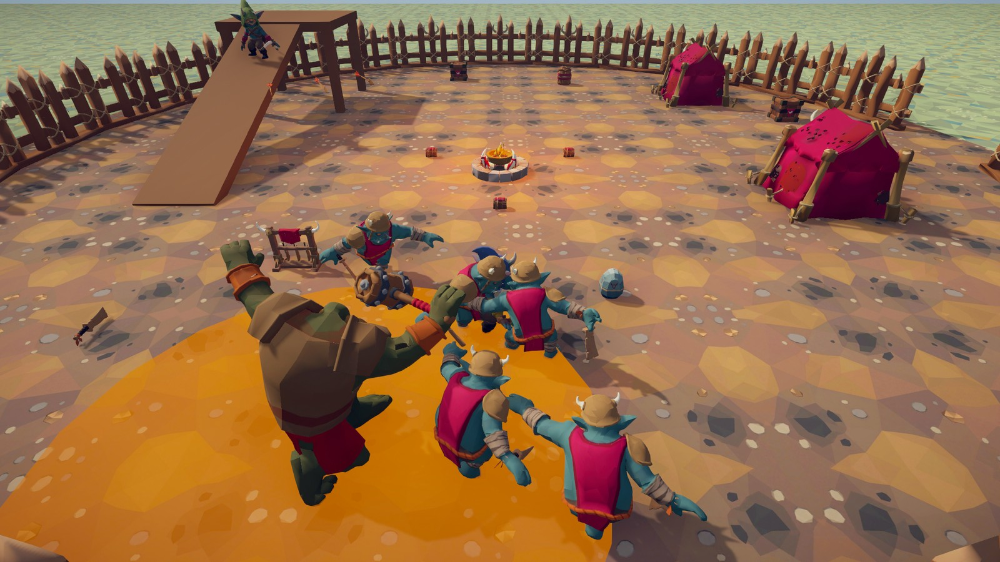
What is in the box:
- Eight enemy prefabs (
Prefabs/Enemies) built from more than twenty reusable actions (chase, circle, flank, guard, dodge, flee, take cover, teleport, summon, heal, hide, throw objects, pick up weapons, ...) and 26 attacks defined as data (Data/Attacks). - Combat rules shared by everyone: health and poise (stagger), teams, blocking, parrying, guard breaks, knockback, projectiles that can be reflected, weapons that can be dropped and picked up, throwable props and explosive barrels.
- Senses and awareness: sight cones, hearing, an awareness meter that fills before an enemy becomes alert, memory of where the player was last seen, sleeping enemies, alarms that wake a whole camp.
- Group coordination: attack tokens so only a few enemies attack at once, surround slots so groups spread out, alerts.
- Difficulty profiles (
Data/Difficulty): four levels that change reaction time, damage, combos and more without touching the AI. - Wave encounters (
EnemySpawner): portals, waves, barriers and events. - Feedback system: sounds, particles, camera shake and hit-stop for every gameplay moment, resolved from per-character profiles and per-attack cues, with placeholders until you add your own assets.
- Animation tooling: one shared base Animator for every character, Override Controllers generated from a folder of clips, an editable clip mapping with six spare slots and named states of your own for new moves (kept in your folder, so an update keeps them), hit-frame detection, stride measurement, and a Swap Model tool that puts your own character on any enemy.
- Weapon tools: line a weapon up in the hand with handles, check it through an attack, resize it (its reach follows), give an enemy another weapon, or make one from your own model.
- A demo scene with a zone per archetype and an example player (
Demo).
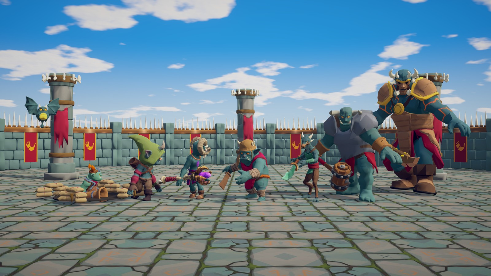
1.1 Requirements
| Requirement | Notes |
|---|---|
| Unity 6000.x | Developed and tested with 6000.4. |
| TinnyStudios Utility AI (core) | Included. Every enemy action is a core TimedUtilityAction, every consideration a core Consideration. The core comes with this package, in Assets/TinnyStudios/UtilityAI. |
AI Navigation package (com.unity.ai.navigation) |
Required. Enemies move with NavMeshAgent, and the demo bakes its NavMesh with a NavMeshSurface. The pack offers to install it (see below). |
Post Processing package (com.unity.postprocessing) |
Optional. Only the demo's bloom, colour grading and ambient occlusion use it, on the Built-in pipeline only (on URP use a Volume instead, see Render Pipelines). |
| Render pipeline | Built-in (as shipped) or URP: the pack converts its materials in one click (Tools ▸ TinnyStudios ▸ RPG Enemies ▸ Render Pipeline ▸ Convert Materials To URP, offered automatically when URP is active) and can revert them. HDRP is not supported. See Render Pipelines. |
| Input | Either backend. The demo player, HUD, camera and the AI Debug View read input through DemoInput, which compiles against whichever Project Settings ▸ Player ▸ Active Input Handling you use (Input Manager (Old), Input System Package (New) or Both); no input package needs to be installed. The enemies read no input at all. |
1.2 Installation
- Import the package. It brings the Utility AI core with it, in
Assets/TinnyStudios/UtilityAI. -
On the first load of an editor session, RPG Enemies: Package Dependencies checks the project manifest and offers to install anything missing through the Package Manager (AI Navigation is required, Post Processing optional). Choose Install Required or Install All. To run the check again later use Tools ▸ TinnyStudios ▸ RPG Enemies ▸ Check Package Dependencies. (
Scripts/Editor/RPGEnemiesDependencies.cs; it never runs in batch mode.)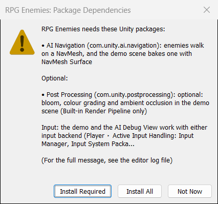
The Package Dependencies dialog in a project that has neither package: the required and optional packages, the input note, and the Install Required, Not Now and Install All buttons 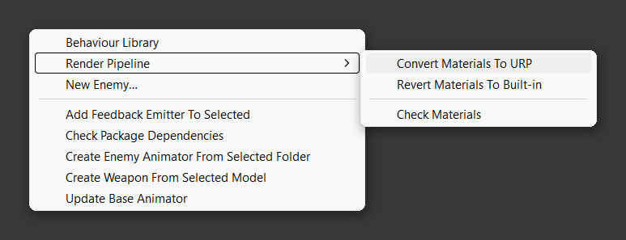
The Tools ▸ TinnyStudios ▸ RPG Enemies menu: the Behaviour Library, the Render Pipeline submenu (open: convert, revert and check the materials) and the New Enemy wizard, then the feedback emitter helper, the dependency check, and the animator and weapon tools -
On URP, the pack then offers to convert its materials (Post Processing is not offered there). See Render Pipelines.
- Open
Demo/Scenes/RPGEnemiesDemo.unityand press Play. Walk into the camp or press 1-7 to jump to a zone. - To put enemies in your own game, follow Quick Start.
Every menu of the pack is under TinnyStudios ▸ RPG Enemies: the tools in Tools, and new assets (Attack Data, Difficulty and Feedback Profiles, Extra Animator States, considerations), New Enemy… and script templates (Scripting) in the Project window's Create menu.
The demo scene, prefabs and data were generated with a development tool that is not part of the package. To see how an archetype is assembled, open its prefab: it is made only of the components and assets described in this manual.
1.3 Folder map
RPGEnemies/
├── Animation/ EnemyBase.controller (the shared base Animator) and the upper-body avatar mask
├── Data/
│ ├── Attacks/ 26 Attack Data assets: range, timing, damage, combos, animation, feedback
│ ├── Considerations/ The considerations the prefabs share: flags, values, distances, composites
│ └── Difficulty/ Easy, Normal, Hard, Elite
├── Demo/ Only what the demo uses: delete it once you have seen it
│ ├── Feedback/ The demo scene's default profile (footsteps, alert) and the hero's, with their sounds and effects
│ ├── Lighting/ Demo sky, lighting and post-processing assets
│ ├── Materials/ The demo level's materials (Built-in pipeline shaders)
│ ├── Prefabs/ Demo Player, throwables, the weapons on its racks
│ ├── Scenes/ RPGEnemiesDemo.unity and its baked NavMesh
│ └── Scripts/ DemoPlayer, DemoCamera, DemoHUD (example code, meant to be replaced)
├── Documentation/ The PDF guides (this Manual, Customization, Code Extending), README.md, Images
├── Feedback/
│ ├── Audio/ Sample sounds (synthesized WAVs) the enemies and attacks play
│ ├── Effects/ Sample particle prefabs: hit and block sparks, the death poof, stun stars
│ └── Profiles/ Humanoid Base and Melee Soldier feedback profiles
├── Materials/ Materials the enemies and projectiles use: the Pop-up Shooter's foxhole, fireball, boulder, spit
├── Models/ The rigged characters, their clips, weapons and environment props
├── Prefabs/
│ ├── Enemies/ The eight archetypes
│ ├── Projectiles/ Arrow, Fireball, Cannon Shell, Boulder, Spit: what the ranged Attack Data fire
│ ├── Recipes/ Four enemies mixed from the archetypes' behaviours (Customization guide, chapter 8)
│ └── Templates/ The Starter Humanoid Enemy the New Enemy wizard starts from
├── Samples/
│ └── Extending/ The Code Extending guide's example scripts, in an assembly of their own
└── Scripts/
├── Editor/ Inspectors, Behaviour Library, New Enemy wizard, model, weapon and animator tools
└── Runtime/
├── Actions/ Every enemy action: EnemyAction, AttackAction, PlayAnimationAction, ...
├── Animation/ EnemyAnimator, ProceduralEnemyAnimator, HumanoidGuardPose
├── Combat/ Health, DamageInfo, teams, ICombatTarget, SimpleCombatTarget, Projectile
├── Considerations/ Enemy Flag, Enemy Value, Attack Range, Phase, Composite
├── Debug/ AIDebugView (F1; Editor and Development Builds), AwarenessIndicator
├── Enemy/ Enemy, EnemyContext, EnemySenses, movers, DifficultyProfile
├── Feedback/ FeedbackEmitter, FeedbackProfile, FeedbackCue, FeedbackManager, FeedbackHub
├── Group/ GroupCoordinator, EnemySpawner, PositionPicker
└── World/ WeaponItem, WeaponRack, Throwable, IdleSpot
Assemblies
The scripts compile into assemblies of their own:
| Assembly | Folder | Namespace |
|---|---|---|
TinnyStudios.UtilityAI (and .Editor) |
The core's UtilityAI/Scripts/Core (and Scripts/Editor) |
TinnyStudios.AIUtility |
TinnyStudios.RPGEnemies |
Scripts/Runtime |
TinnyStudios.AIUtility.RPGEnemies |
TinnyStudios.RPGEnemies.Editor |
Scripts/Editor |
TinnyStudios.AIUtility.RPGEnemies.Editor |
TinnyStudios.RPGEnemies.Demo (and .Demo.Editor) |
Demo/Scripts (nothing else references it) |
TinnyStudios.AIUtility.RPGEnemies.Demo |
TinnyStudios.RPGEnemies.Samples.Extending |
Samples/Extending (nothing references it) |
TinnyStudios.Samples.Extending |
Scripts without an assembly definition see the core and the pack automatically; an assembly definition of yours references
TinnyStudios.UtilityAI and TinnyStudios.RPGEnemies. Keep your scripts outside Assets/TinnyStudios, which updates replace.
You can delete the Demo and Samples folders. No shipped assembly references them, and no shipped asset uses anything
in them: the enemies, templates, recipes, Attack Data and profiles keep their projectiles (Prefabs/Projectiles), sounds,
effects and profiles (Feedback) and materials (Materials), which live outside the demo. What goes with Demo is only
the demo's own: its scene, player, HUD, level and lighting, the scene-wide feedback profile that gives every character
in the demo footsteps and hurt, death and alert sounds, and the throwables and rack weapons it places.
1.4 Demo controls
| Key | Action |
|---|---|
| W A S D | Move |
| Shift | Sprint (enemies hear it from further away) |
| Space | Dodge roll (invulnerable while rolling) |
| Left mouse | Light attack |
| E or middle mouse | Heavy attack: slower, drains a lot of guard, breaks most guards in one hit |
| Hold right mouse | Block. Blocking just before a hit lands is a parry: no damage, and the attacker is staggered |
| Block a projectile | Sends it back at the shooter, stronger |
| Q | Heal (some enemies punish it) |
| F | Pick up or throw objects and weapons |
| G | Drop the held weapon |
| 1-7 | Teleport to a zone |
| F1 | Show every enemy's thinking (AI Debug View) |
| F2 | God mode |
| R | Reset the scene |
| Tab | Hide the controls panel |
| Mouse wheel | Zoom the camera |
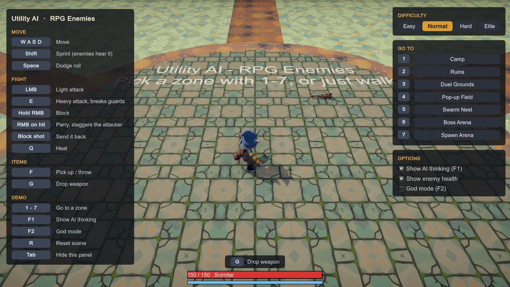
The demo has seven zones, one per situation: Camp (Melee Soldiers, a Heavy Melee and an Archer around a fire),
Ruins (the Mage with soldiers to heal), Duel Grounds (the Agile Melee), Pop-up Field, Swarm Nest,
Boss Arena and Spawn Arena (an EnemySpawner encounter).
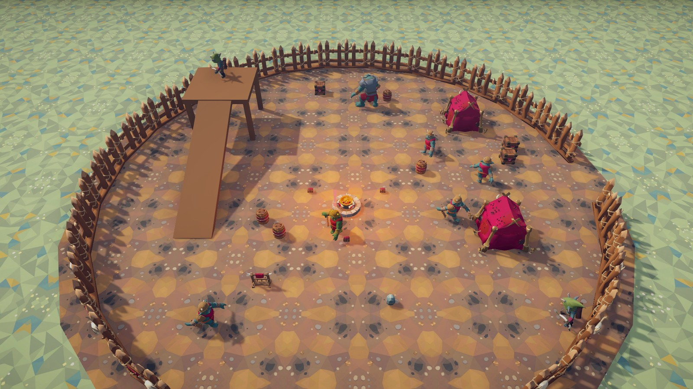
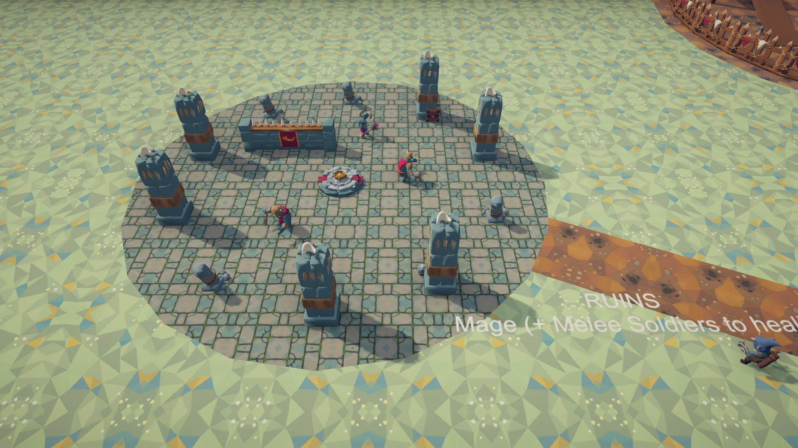
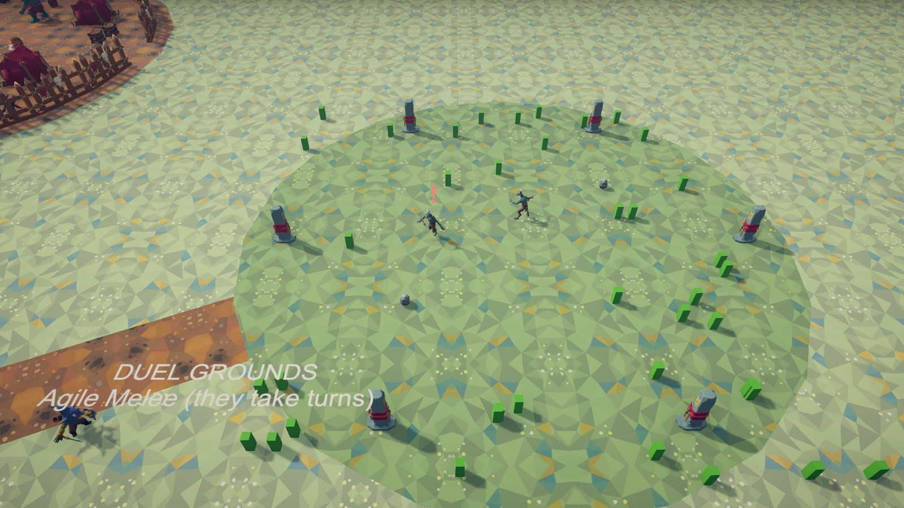
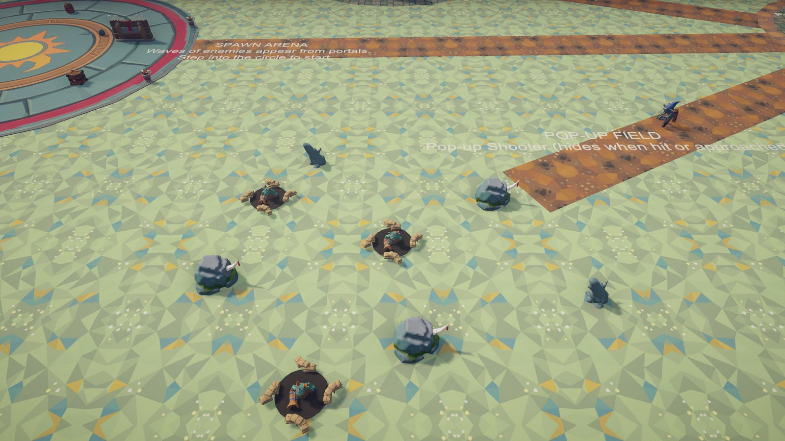
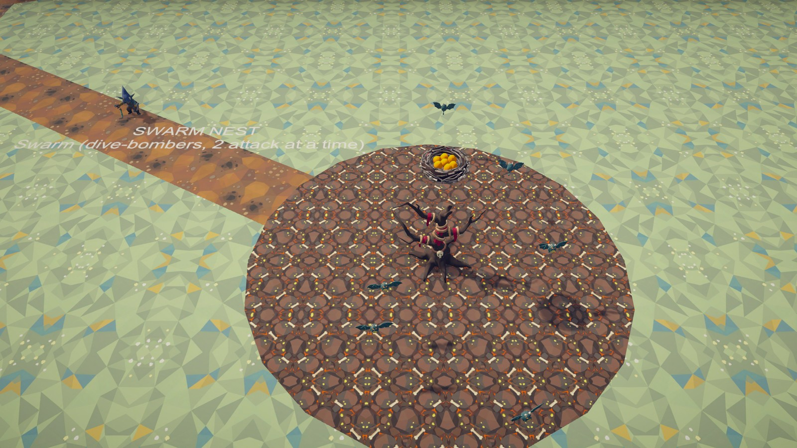
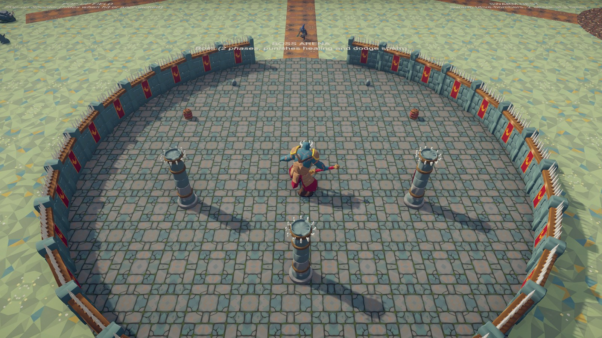
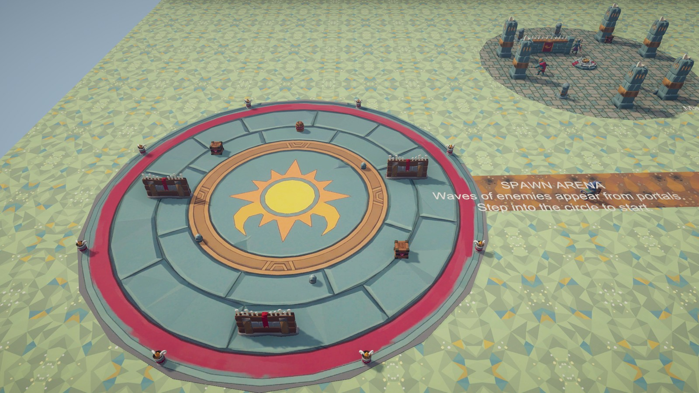
1.5 Where to go next
- Quick Start: your first enemy in five minutes, then groups, difficulty, the debug view and wave encounters.
- Integration: how the enemies talk to your player (
SimpleCombatTarget,Health, blocking and parrying, reflecting projectiles, damaging enemies from your own attacks) and how to give everything sounds and effects. - Archetypes: what each of the eight enemies does and which knobs are worth tuning.
- Authoring: making your own enemies and variants, attacks as data, weapons, the animation workflow, the Swap Model tool.
- Render Pipelines: Built-in vs URP, what the material conversion does, post-processing on URP.
- The Customization guide (
RPGEnemies_Customization.pdf): make the enemies your own without code, step by step: your characters, weapons, animations, attacks, sounds and effects, and behaviour. - The Code Extending guide (
RPGEnemies_CodeExtending.pdf), for programmers: new actions, considerations and kinds of attack, and your own player, damage system, movement, animation, senses, spawners and feedback output, built on the pack's interfaces and virtual methods, with the example scripts inSamples/Extending.
1.6 Known limits
- The art ships for the Built-in Render Pipeline; URP needs the one-click conversion, HDRP is not supported (see Render Pipelines).
- The demo scripts and the AI Debug View read input through
DemoInput(works with the Input Manager and the Input System package); the enemies themselves read no input. - Ground enemies need a NavMesh. Without one they stand still (the flying Swarm does not need one).
- The Boss and the Heavy Melee use the same NavMesh as everyone else but are wider (about 1 m and 0.7 m radius), so give them room: they cannot follow the player through gaps a NavMesh baked for a 0.5 m agent still allows.
2 Quick Start
Five minutes from an empty scene to enemies that hunt your player. Nothing here needs code: your player only needs a way to move (any controller) and two components.
2.1 Your first enemy
1. Bake a NavMesh
Ground enemies walk with Unity's NavMeshAgent, so the level needs a NavMesh (AI Navigation package; the pack offers to
install it, or use Tools ▸ TinnyStudios ▸ RPG Enemies ▸ Check Package Dependencies).
- Put your ground and walls under one parent object (a plane is enough to start).
- Add Navigation ▸ NavMesh Surface to that parent, set Collect Objects to Children and press Bake.
The enemy prefabs use the default Humanoid agent type. The Boss (about 1 m radius) and the Heavy Melee (0.7 m) walk on the same NavMesh, so keep corridors wider than 2 m where they go.
2. Drop in enemies
Drag any prefab from Prefabs/Enemies onto the NavMesh: Melee Soldier and Archer are a good first pair. Each prefab
is complete: senses, movement, health, a FeedbackEmitter and an Actions child holding its behaviours. Nothing on it
needs to be wired to your scene.
3. Make your player a target
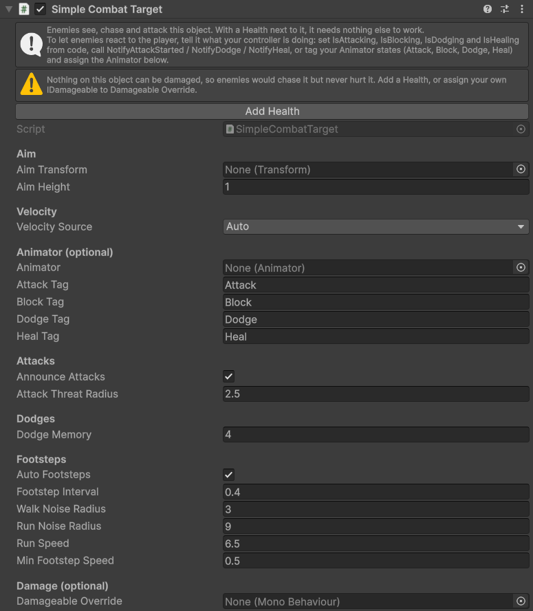
Select your player object and Add Component ▸ TinnyStudios ▸ RPG Enemies ▸ Simple Combat Target, then press
Add Health in its inspector (or add a Health yourself). The target keeps the Health on the Player team and
registers the player as something the enemies can see, chase and hit. (With a damage system of your own instead of
Health, see Integration.)
Two things the player object needs:
- A collider (a
CharacterControllercounts). Enemy hits are physics overlaps that look for theHealthon the collider or one of its parents, and arrows fly with sphere casts. - Some way to move, so you can test. Any controller works; the component reads velocity from a
CharacterController, aRigidbodyor the transform's movement (its Velocity Source) so archers and mages lead their shots.
Set Health ▸ Max Health to something you can survive with (the demo player has 150).
4. Play
Press Play and walk towards the enemies. An enemy that sees you fills an awareness meter (faster the closer you are), shows "?" when suspicious and "!" when alert, then chases, surrounds and attacks. Melee attacks wind up before they land, so you can step away; arrows are led at where you are going. Sprint and enemies hear you sooner; sneak up from behind and they notice later. Killing the player (or disabling the component) sends them back to searching, then to idling.
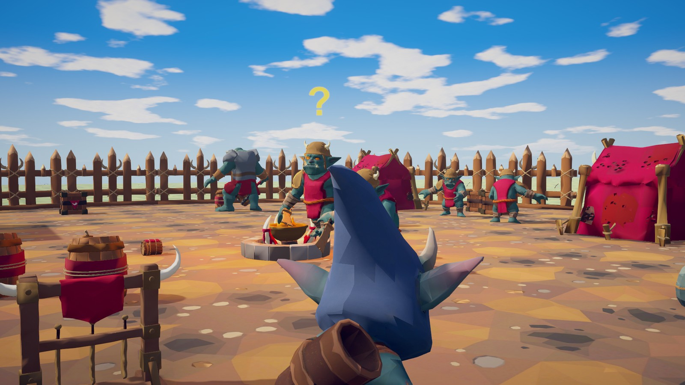
That is the whole integration for enemies that fight a player. Everything below is optional.
2.2 Next steps
Let enemies react to what the player does
Enemies dodge your swings, punish your heals, switch to guard-breakers when you block and answer dodge spam, but only if
they know what you are doing. Tell the SimpleCombatTarget from your controller in any of three ways (no code needed for
the last one):
- set its
IsAttacking,IsBlocking,IsDodgingandIsHealingproperties; - call
NotifyAttackStarted(duration),NotifyDodge(duration)andNotifyHeal(duration); - assign your
Animatoron the component and tag your Animator states Attack, Block, Dodge and Heal.
Integration covers this, blocking and parrying, and how your attacks damage enemies (NewDamage + DealDamageInFront).
Coordinate a group
Enemies with no coordinator share one default GroupCoordinator (3 attackers at once, alerts within 25 m). For a camp or a
room, parent its enemies under an object with a Group Coordinator:
| Field | Effect |
|---|---|
| Max Attackers | How many enemies may attack at the same time. The rest circle and wait for an attack token. Difficulty profiles can add more: the group allows the most that any member's profile asks for. |
| Alert Radius | When one member notices the player or is hit, every member within this distance becomes alert too. |
| Surround Slots | Evenly spaced positions around the player; each member keeps its own, so groups spread out instead of stacking. |
Enemies register with the coordinator on their nearest parent when they start (EnemyContext.Initialize), so spawned
enemies join the group of the object they are parented to. To move one to another group later, call
enemy.JoinGroup(group).
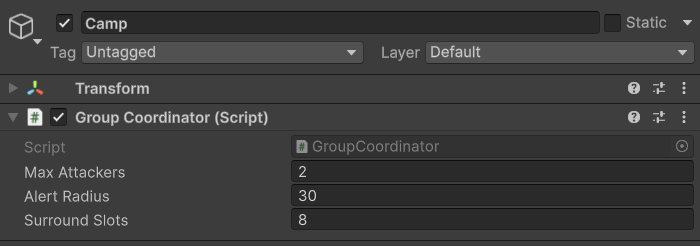
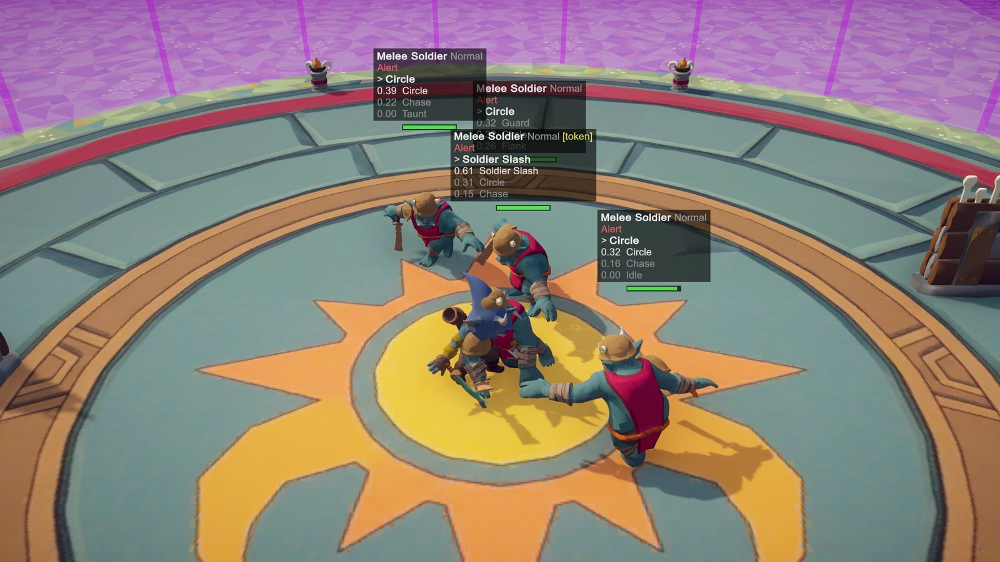
Change difficulty
Data/Difficulty holds Easy, Normal, Hard and Elite DifficultyProfile assets. Assign one to Enemy ▸ Difficulty
on an enemy in your scene or on a Prefab Variant of your own (Authoring), or switch at runtime with
enemy.ApplyDifficulty(profile) (the demo HUD's buttons do this for
every enemy in Enemy.All, and for every enemy that starts later through Enemy.Spawned). A profile changes, without
touching any action:
| Profile | Health | Damage | Speed | Reaction time | Awareness | Dodge / Guard chance | Wind-up | Cooldown | Extra combo hits | Extra attackers |
|---|---|---|---|---|---|---|---|---|---|---|
| Easy | ×0.75 | ×0.6 | ×0.9 | 0.45 s | ×0.7 | 20% / 40% | ×1.3 | ×1.4 | 0 | 0 |
| Normal | ×1 | ×1 | ×1 | 0.25 s | ×1 | 50% / 70% | ×1 | ×1 | 0 | 0 |
| Hard | ×1.4 | ×1.3 | ×1.1 | 0.15 s | ×1.3 | 75% / 95% | ×0.8 | ×0.8 | +1 | +1 |
| Elite | ×2 | ×1.6 | ×1.2 | 0.08 s | ×1.6 | 95% / 100% | ×0.65 | ×0.6 | +2 | +1 |
Reaction time is how often the AI re-checks its options mid-action. Dodge and guard chances multiply each Dodge and Guard
action's own Skill. A profile can also tint the enemy (Tint, Tint Strength) so players can tell tiers apart.
Make your own in your folder with Create ▸ TinnyStudios ▸ RPG Enemies ▸ Difficulty Profile, or by duplicating one of
these, rather than changing the pack's four: a pack update puts them back.
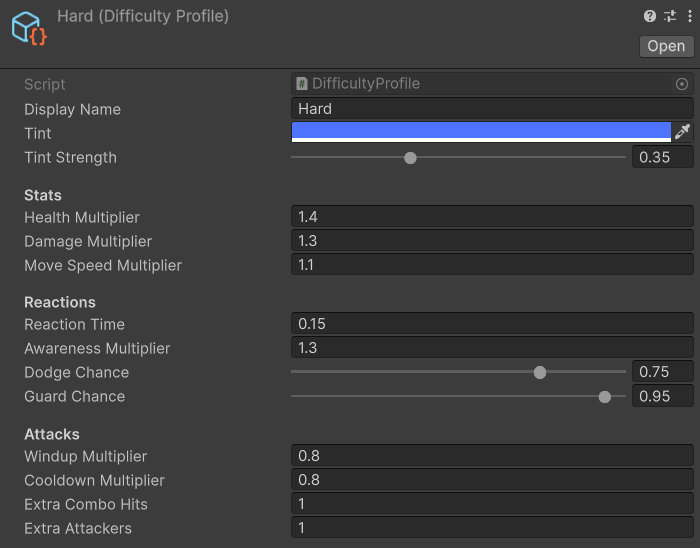
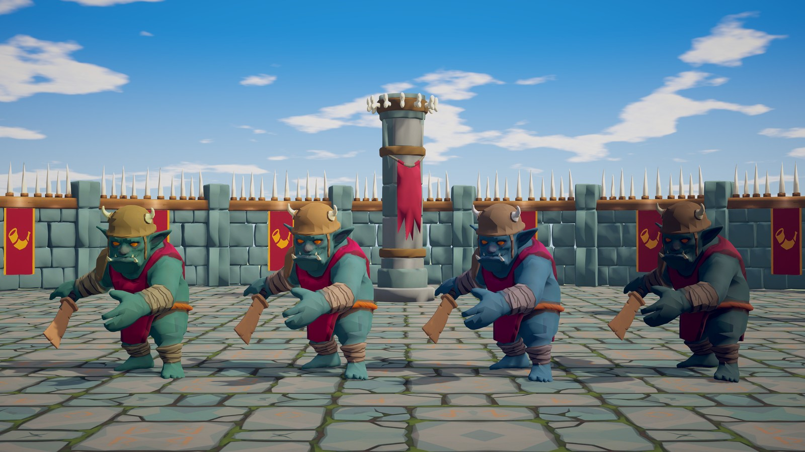
See what they are thinking
Add an AI Debug View component (Scripts/Runtime/Debug) to any object in the scene. It works in the Editor and in
Development Builds, and switches itself off in a release build unless you tick Show In Release Builds (the demo scene
does). Press F1 (its Toggle Key) to draw, above every living enemy within Max Distance of the camera:
- archetype, difficulty and
[token]when it holds an attack token; - awareness state and meter, boss phase,
STAGGERED, andGUARDINGwith the guard's remaining points; - the current action and the top three scoring actions with their scores.
Show Health Bars draws a bar over enemies that are hurt or engaged. This is the fastest way to tune: if an enemy never picks an action, its score tells you which consideration is zeroing it.
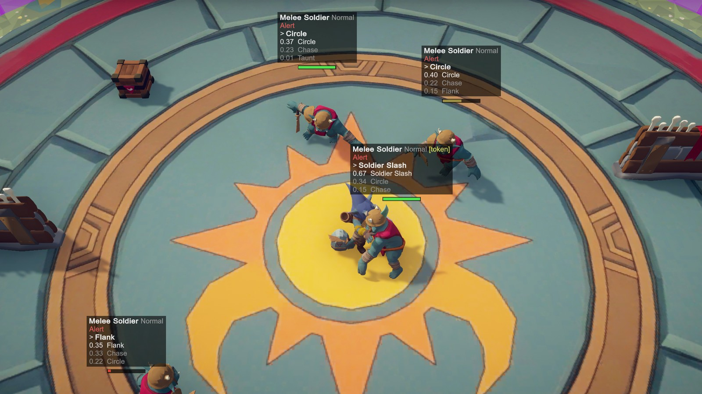
Spawn waves
Add an Enemy Spawner (Scripts/Runtime/Group) where an ambush should happen, and give it a GroupCoordinator on the
same object so the spawned enemies coordinate.
| Field | Effect |
|---|---|
| Waves | Each wave lists enemy prefabs with counts, a name and a delay before it starts. The next wave starts when every enemy of the current one is dead. |
| Trigger Radius | The fight starts when a combat target comes this close. 0 = only when started from code (Begin). |
| Spawn Points / Spawn Radius | Where enemies rise. Without points, random spots around the spawner. |
| Portal Time / Emerge Time | A portal shows as a warning, then the enemy rises, invulnerable and inactive, over Emerge Time. |
| Alert On Spawn | Enemies come out already hunting the player who triggered the fight. |
| Barriers | Objects switched on during the fight and off when it is cleared, e.g. walls that lock the arena. |
| Rearm Delay | Seconds after clearing before it can trigger again; below 0 it fires once. |
If the player dies or leaves, the encounter resets and every spawned enemy is removed. Events gives you OnWaveStarted,
OnWaveCleared, OnAllWavesCleared and OnEnemySpawned(Enemy) for health bars, quest counters or doors. From a script
or a cutscene, Begin(target) starts the fight, Target is who it is against, and ResetEncounter() calls it off.
GetSpawnPoint, CreateEnemy, RemoveEnemy and ResetEncounter are virtual, so a subclass can change where enemies
appear, how they are made and removed, and what else resets with the fight, but enemies cannot be pooled yet: a dead
enemy shuts its AI down for good and is destroyed, and an enemy sets itself up only once. The demo's spawn arena (zone 7)
is a working example.
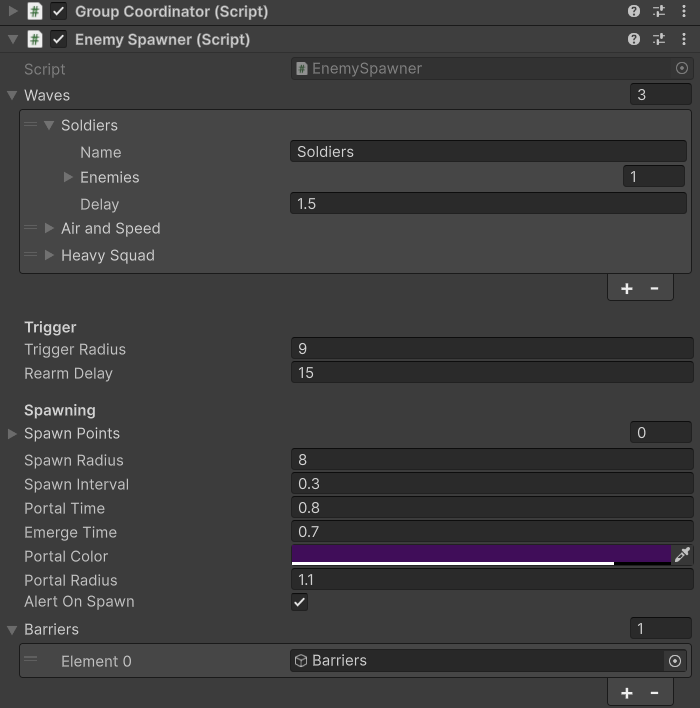
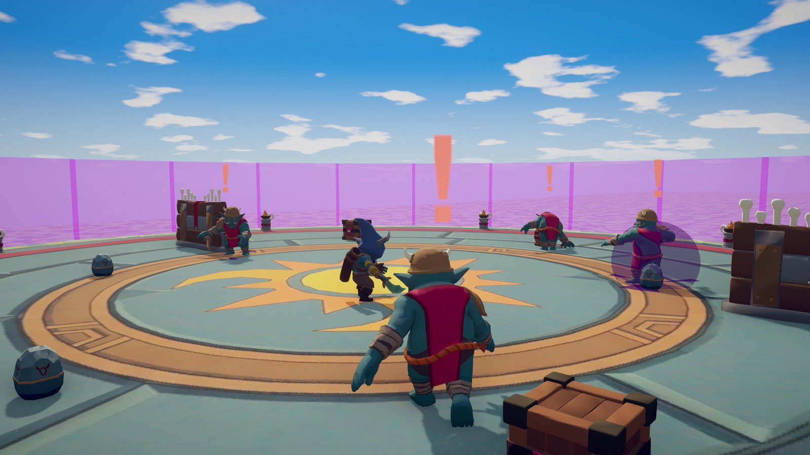
Give it sound and effects
Without any setup, hits, blocks, telegraphs and explosions show grey-box placeholders. To replace them, select your own Prefab Variant of an enemy (or an enemy in your scene), open its Feedback Emitter, press Create to make a profile (it asks where to save it, starting in a folder of yours), or Make Unique when it already uses one of the pack's, and drag audio clips and particle prefabs onto its moments. Integration explains the system and has recipes for one attack, one enemy type and every footstep at once.
3 Integration
How the enemies connect to your game. Everything is in the TinnyStudios.AIUtility.RPGEnemies namespace (assembly
TinnyStudios.RPGEnemies). The Code Extending guide (RPGEnemies_CodeExtending.pdf) takes each of these connections
further in C#.
Enemies need three things from you, and offer one back:
| They need | Provided by |
|---|---|
| Something to see, chase and read | ICombatTarget, implemented for you by the SimpleCombatTarget component |
| Something to damage | IDamageable, implemented by the Health component or by your own damage system |
| Somewhere to walk | A NavMesh (see Quick Start) |
| They offer: a way for your attacks to hurt them | IDamageable on every enemy, plus helpers on SimpleCombatTarget |
The demo's Demo/Scripts/DemoPlayer.cs is a complete example of a player that uses all of this, including the optional
guard, parry and projectile reflection. It is deliberately self-contained demo code: copy what you need into your own
controller rather than building on it.
3.1 SimpleCombatTarget
Scripts/Runtime/Combat/SimpleCombatTarget.cs. Add it to your player next to a Health (its inspector offers Add
Health while nothing on the object can be damaged), or next to your own damage system (see Your own damage system
below). With either, it already makes enemies fight the player:
- it implements
ICombatTargetand registers withCombatTargetsinOnEnable/ unregisters inOnDisable, so disabling the component hides the player from every enemy; - it keeps the
Healthon the Player team (Reset,OnValidateandAwakeall switch an Enemy team to Player; Neutral is left alone). On the Enemy team, enemies would ignore the player: they only fight a target their team may hurt; - it reports the player's velocity so ranged enemies lead their shots (
Velocity Source: Auto uses theCharacterController, else theRigidbody, else the transform's movement; Manual uses whatever you assign toVelocity); - it aims enemies at
Aim Transform(e.g. a chest bone) orAim Heightabove the root, which is also where line of sight is checked; - it makes footstep noise from your movement speed (
Auto Footsteps: everyFootstep Intervalseconds while faster thanMin Footstep Speed, heard fromWalk Noise Radius, orRun Noise RadiusaboveRun Speed).
Telling enemies what the player does
Enemies read four flags and a counter. Each changes real decisions:
| Member | Read by | Effect on enemies |
|---|---|---|
IsAttacking |
Target Is Attacking consideration | The Agile Melee's Dodge scores while it is on. CombatEvents.AttackStarted (raised when it turns on) makes every enemy within the threat radius re-plan at once, so dodges and guards happen on the same frame as your swing. |
IsBlocking |
Guard Breaker Bonus, Target Not Blocking | Guard-breaking and unblockable attacks (Ground Slam, Heavy Charge, Boss Slam, Delayed Smash) score higher; the Agile Melee's Quick Slash and Lunge wait for you to lower the guard. |
IsDodging |
Target Is Dodging flag, dodge counter | Each rising edge counts one dodge. |
IsHealing |
Punish Healing | The Boss Charge scores double while you heal. |
RecentDodgeCount |
Target Spams Dodge | The Boss's Delayed Smash, an unblockable hit with a long wind-up, scores with the number of dodges in the last Dodge Memory (4) seconds. |
Set them whichever way suits your controller; they combine, and the rising-edge logic (dodge counting, attack announcement) works the same for all three:
- Properties. Assign
IsAttacking,IsBlocking,IsDodging,IsHealingevery frame or on state changes. Setting one tofalsealso ends a timed flag started by a helper. If your own damage script decides blocks, implementIGuardState(IsGuarding) on it too:IsBlockingthen follows it, so the guard is set in one place. - Timed helpers.
NotifyAttackStarted(duration, threatRadius)warns enemies now and keepsIsAttackingon fordurationseconds (0 = you manage the flag;threatRadius0 = the inspector's Attack Threat Radius).NotifyDodge(duration)counts a dodge and keepsIsDodgingon.NotifyHeal(duration)keepsIsHealingon. - Animator tags. Assign your
Animatoron the component and give your attack, block, dodge and heal states the tags in Attack Tag, Block Tag, Dodge Tag and Heal Tag ("Attack", "Block", "Dodge", "Heal" by default). Any layer counts, including the state being transitioned into. No code at all.
With Announce Attacks on (the default), IsAttacking turning on raises CombatEvents.AttackStarted with
Attack Threat Radius. Call NotifyAttackStarted yourself when you know the reach of the particular attack; it does not
announce twice. MakeNoise(radius) raises a noise enemies can hear (shouts, landings, smashed pots).
In Play mode the component's inspector shows what enemies are reading: registered, alive, the four flags, recent dodges, speed and health.
Hitting enemies
Every enemy has a Health, so any hit is damageable.TakeDamage(info). The important part is DamageInfo.Source: an enemy
that is hit looks for an ICombatTarget on the source object (or its parents), becomes alert to it and warns its group.
Hits without a source still hurt, but the enemy does not know who to turn on. SimpleCombatTarget has two helpers that fill
this in:
using System.Collections;
using TinnyStudios.AIUtility.RPGEnemies;
using UnityEngine;
public class MyPlayerCombat : MonoBehaviour
{
public float Reach = 1.3f, Radius = 1.2f, Windup = 0.2f;
private SimpleCombatTarget _combat;
private void Awake() => _combat = GetComponent<SimpleCombatTarget>();
private void Update()
{
_combat.IsBlocking = Input.GetMouseButton(1); // any input backend works
if (Input.GetMouseButtonDown(0) && !_combat.IsAttacking)
StartCoroutine(Swing());
}
private IEnumerator Swing()
{
// Enemies inside the reach can react during the wind-up (an agile one may dodge).
_combat.NotifyAttackStarted(Windup + 0.1f, Reach + Radius);
yield return new WaitForSeconds(Windup);
var hit = _combat.NewDamage(25f, poiseDamage: 15f, knockback: 1f); // Source, team and direction filled in
hit.GuardDamage = 40f; // optional: drains a raised guard faster
var report = _combat.DealDamageInFront(Reach, Radius, hit); // sphere in front of the aim point, makes noise
if (report.Blocked > 0 && report.Hits == 0)
Debug.Log("A guard took it: flank the enemy, or use a heavier hit");
}
}
NewDamage(amount, poiseDamage, knockback)returns aDamageInfowithSource,SourceTeamandDirectionset. AddGuardDamage(how much guard it drains, 0 = same as the damage) orUnblockablefor special moves.DealDamageInFront(reach, radius, info, noiseRadius)damages every enemy in a spherereachmetres in front of the aim point, never the player, and makes a noise.DealDamageAt(center, radius, info, noiseRadius)does the same anywhere. Both return aHitReport.- For anything else, use the pieces directly:
CombatUtility.DamageSphere(center, radius, info, alreadyHit, ignore)for areas (pass aHashSet<IDamageable>asalreadyHitto hit each target once across several frames; the overloadDamageSphere(center, radius, info, layerMask, alreadyHit, ignore)checks only the layers you pass, such as a hurtbox layer), orCombatUtility.TryDamage(CombatUtility.GetDamageable(collider), info)for raycast weapons. Unlike callingTakeDamagedirectly,TryDamagechecks the team rule and skips null and dead targets.GetDamageableis the lookup every hit in the pack uses: the damageable on the collider or a parent, remembered per collider, so use it instead ofGetComponentInParent<IDamageable>()in hit code that runs every frame. - Layers: enemy hits, projectiles, sight and ground probes check every layer by default, so nothing needs setting up.
With a hurtbox or ground layer of your own, narrow them so props and terrain are never even checked:
Hit Layerson an Attack Data (melee, charge and area hits) and on a Projectile prefab,Sight Blockerson Enemy Senses,Ground Layerson the Enemy Animator and the Flying Enemy Mover. - Projectiles: instantiate any
Projectileprefab and callLaunch(velocity, damageInfo, ownerTransform); it ignores colliders under the owner and only hurts the opposing team.
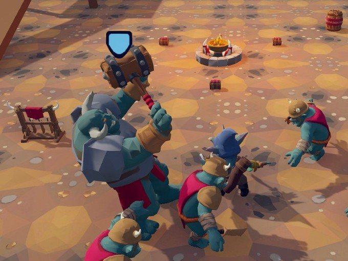
Enemy guards: a guarding enemy (GuardAction) blocks hits from within its Block Angle (140°) in front, once the guard is
up (Raise Time, 0.25 s). Blocked hits deal 1 - Damage Reduction (10%, 5% for the Heavy) and drain GuardDamage (or the
damage) from its guard points; an empty guard breaks, the hit lands in full and the enemy is staggered for longer. Hits from
the side or behind, and Unblockable hits, land in full. A hit that reaches the enemy's poise (Health.MaxPoise) staggers
it (Enemy.StaggerDuration) and may make it drop its weapon.
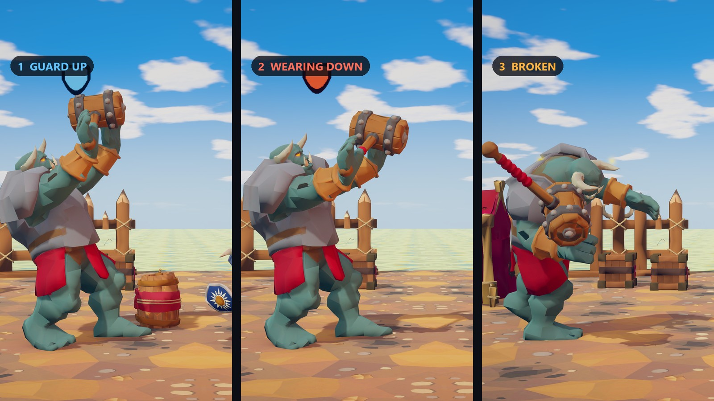
Your own damage system
SimpleCombatTarget works with any IDamageable, not only Health. Implement IDamageable on your own health script
(Team, IsAlive, transform and TakeDamage, which returns what happened: see EHitResult below) and, optionally,
INormalizedHealth (HealthNormalized, 0-1) so enemies can tell how hurt the player is; without it the target reports 1
while alive. The target uses its Damageable Override field if set, else the Health on its object, else any other
IDamageable on it; SetDamageable(damageable) points it at another from code, e.g. a plain C# object. Everything else
(registration, the flags, attack warnings, footsteps, NewDamage) works the same. Health raises the Hurt, Blocked,
Perfect Block and Died feedback moments for the pack's characters; your own system raises them with FeedbackHub.Play if
you want them. The Code Extending guide's HealthBridge sample is a complete bridge.
Implementing ICombatTarget yourself
Only needed if SimpleCombatTarget does not fit (e.g. a target that is not a MonoBehaviour). The interface has eleven
members: Transform, AimPoint (centre of mass, used for aiming and line of sight), Velocity, IsAlive,
HealthNormalized, IsAttacking, IsHealing, IsDodging, IsBlocking, RecentDodgeCount and Damageable. Register
with CombatTargets.Register(this) in OnEnable and CombatTargets.Unregister(this) in OnDisable, raise
CombatEvents.RaiseAttackStarted(this, position, radius) when you attack and CombatEvents.RaiseNoise(position, radius, gameObject)
for footsteps. If the target's Damageable is on a team the enemies cannot hurt when it registers (the Enemy team, by
default), the registry logs a warning once, because enemies ignore a target their team may not hurt.
3.2 Health and IDamageable
IDamageable is anything that can be hit: Team, IsAlive, transform and EHitResult TakeDamage(DamageInfo). Enemies,
the player and props all use it; Throwable implements it on the Neutral team so explosive barrels blow up when hit.
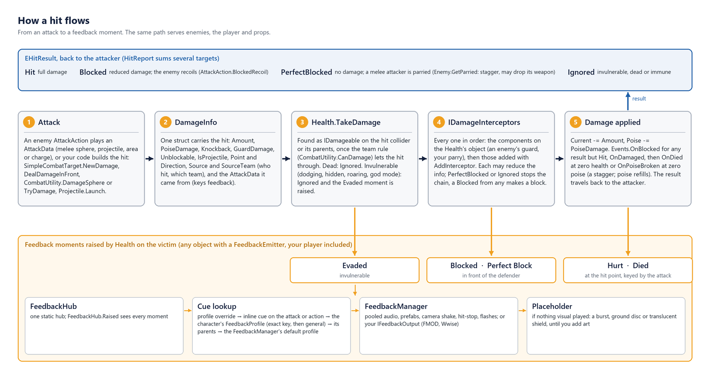
Health is the ready-made implementation and what every enemy uses:
| Field | Meaning |
|---|---|
Team |
Player, Enemy or Neutral (see Teams). Defaults to Enemy. |
MaxHealth |
Current health starts full. Normalized is 0-1. |
MaxPoise, PoiseRegenDelay, PoiseRegenRate |
A hidden stagger meter. Each hit's PoiseDamage lowers it; at 0 Events.OnPoiseBroken fires and it refills. The demo player has 1000 poise so it is never staggered. |
Invulnerable |
While true, hits are ignored (and raise the Evaded feedback moment). The demo sets it during dodges and god mode. |
Events |
OnDamaged(DamageInfo), OnPoiseBroken(DamageInfo), OnHealed(float), OnBlocked(DamageInfo, EHitResult) whenever the interceptors make the hit anything but Hit (Blocked, PerfectBlocked or Ignored), OnDied. |
TakeDamage runs in this order: dead → Ignored; invulnerable → Ignored; every IDamageInterceptor in turn may change
the info, and the first PerfectBlocked or Ignored cancels the hit (see Blocking and parrying below); damage and poise
are applied, a block's reduced damage included; OnDamaged; OnDied at zero health; OnPoiseBroken at zero poise.
TakeDamage does not check teams: the pack's hits ask the team rule before calling it, and so does
CombatUtility.TryDamage. Heal(amount) clamps to max and fires OnHealed; Heal(amount, false) skips the
feedback moment (use it for regeneration every frame). ResetHealth() refills everything, e.g. on respawn.
SetMaxHealthMultiplier(m) scales max health from its original value keeping the current percentage (difficulty profiles use it).
TakeDamage, Awake and Update are virtual, for a Health subclass of your own.
3.3 Teams
ETeam has Player, Enemy and Neutral. Whether a hit lands is up to the team rule, CombatUtility.TeamRule, which
every hit in the pack asks through CombatUtility.CanDamage(attacker, victim): melee and area attacks, projectiles,
throwables, explosions and CombatUtility.TryDamage. The default rule (DefaultTeamRule) lands a hit if the victim is
Neutral or the teams differ. So enemies (team Enemy) damage the player (team Player) and neutral props, never each other;
explosions are Neutral-sourced and hurt everyone, the thrower included. SimpleCombatTarget enforces the Player team on
its Health; anything else you make damageable chooses its own.
For factions or friendly fire, set CombatUtility.TeamRule to your own ITeamRule (CanDamage(attacker, victim));
teams beyond the three are numbers cast to ETeam, e.g. (ETeam)10, set from code. The rule is reset on entering Play
mode, so set it at runtime. It also decides whom enemies fight: an enemy only targets a registered combat target whose
Damageable its team may hurt (EnemySenses.IsHostile), so a faction picks its targets by the same rule.
3.4 DamageInfo, EHitResult and HitReport
DamageInfo (a struct) is everything a hit carries:
| Field | Meaning |
|---|---|
Amount, PoiseDamage, Knockback |
Health lost, poise lost, metres the victim is pushed along Direction. |
GuardDamage |
Guard points drained when blocked; 0 means use Amount. Heavy hits set it high to break guards. |
Unblockable |
Cannot be blocked or parried; the victim must dodge. Enemies show a red warning flash for these. |
IsProjectile |
Set by Projectile. |
Point, Direction |
Where it landed and which way it travelled (used for knockback and effect orientation). |
Source, SourceTeam |
Who hit and their team. Source is how an enemy learns who attacked it. |
Attack |
The AttackData it came from, if any; it keys the victim's feedback (a "Boss Slam" hurt sound). |
EHitResult is what the victim reports back: Hit (full damage), Blocked (reduced), PerfectBlocked (a parry: no damage)
or Ignored (invulnerable, dead, or wrong team). Attackers react to it: an enemy whose attack is Blocked recoils and gets a
longer recovery (AttackAction.BlockedRecoil), and one whose melee attack is PerfectBlocked is parried
(Enemy.GetParried: a 1.5× stagger and, for disarmable enemies, a dropped weapon).
HitReport sums an attack that can hit several targets: Hits, Blocked, PerfectBlocked, Total, and Point of the
first landed hit (HasPoint).
3.5 Blocking and parrying: IDamageInterceptor
Put a component implementing IDamageInterceptor on the same object as the Health. Health calls
Intercept(ref DamageInfo info) before every hit. Change the info (reduce Amount, zero PoiseDamage) and return the
result: Blocked applies the modified damage, PerfectBlocked or Ignored cancels it, Hit lets it through.
Health fires Events.OnBlocked for any result but Hit, and the Blocked / Perfect Block feedback moments, for you.
A Health can have several interceptors, a guard and armour for example, and runs them all in order: the interceptor
components on its object in component order (found in Awake), then any added from code with
health.AddInterceptor(interceptor), such as a buff, a component on a child or a plain C# object (RemoveInterceptor
takes one out, Interceptors lists them). Each sees the hit as the one before left it. The first to return
PerfectBlocked or Ignored cancels the hit and the rest are skipped; a Blocked from any of them makes the hit a block.
On an enemy the Enemy component is an interceptor (its guard blocks through it), so an armour component placed below it
reduces what the guard let through; Enemy.Intercept and GuardAction.Block are virtual for rules of your own.
public class MyGuard : MonoBehaviour, IDamageInterceptor
{
public SimpleCombatTarget Combat;
public float BlockAngle = 150f, ParryWindow = 0.2f, BlockDamageReduction = 0.85f;
private float _blockStarted = float.NegativeInfinity;
public void RaiseGuard() { _blockStarted = Time.time; Combat.IsBlocking = true; }
public void LowerGuard() => Combat.IsBlocking = false;
public EHitResult Intercept(ref DamageInfo info)
{
if (!Combat.IsBlocking || info.Unblockable)
return EHitResult.Hit;
// Only hits from the front are blocked, so enemies that flank you get through.
var towardsAttacker = info.Source != null ? info.Source.transform.position - transform.position : -info.Direction;
if (Vector3.Angle(transform.forward, CombatUtility.Flat(towardsAttacker, transform.forward)) > BlockAngle * 0.5f)
return EHitResult.Hit;
if (Time.time - _blockStarted <= ParryWindow)
return EHitResult.PerfectBlocked; // no damage; a melee attacker is staggered and may drop its weapon
info.Amount *= 1f - BlockDamageReduction;
info.PoiseDamage = 0f;
info.Knockback *= 0.3f;
return EHitResult.Blocked;
}
}
DemoPlayer.Intercept is the full version: a guard meter drained by GuardDamage, a guard break when it empties (the hit
lands in full and the player is stunned for GuardBreakDuration), a re-arm delay so parry cannot be spammed, and
HumanoidGuardPose driven through IGuardPoseSource so the character visibly raises its shield. The pose jolts back
when the guard takes a hit: from the Health in its parents or, without one, from the character's Blocked and
Perfect Block feedback moments. With neither, call PlayBlockJolt(result) yourself.
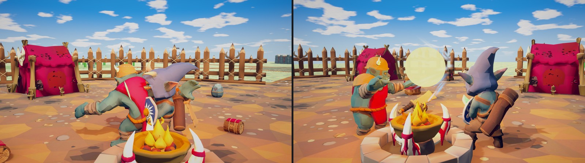
3.6 Reflecting projectiles: IProjectileReflector
Arrows, cannon shells, fireballs and boulders are Projectiles with Reflectable on. When one hits a collider whose
parents have both an IDamageable and an IProjectileReflector, TryReflect(projectile, out newDirection) is asked first.
Return true to send it back: the projectile now belongs to the reflector's team, its damage and poise damage are multiplied
by ReflectDamageMultiplier (2 for fireballs and boulders, 3 for arrows, 5 for cannon shells), its speed by
ReflectSpeedMultiplier, and it ignores the reflector from then on. projectile.Owner is the shooter (or the last reflector),
so aiming back at it is one line:
public bool TryReflect(Projectile projectile, out Vector3 newDirection)
{
newDirection = Vector3.zero;
if (!Combat.IsBlocking)
return false;
var owner = projectile.Owner;
newDirection = owner != null ? owner.position + Vector3.up - projectile.transform.position : -projectile.Velocity;
return true;
}
3.7 CombatEvents
Two static events every enemy listens to:
AttackStarted(ICombatTarget attacker, Vector3 position, float radius): raised bySimpleCombatTargetwhenIsAttackingturns on orNotifyAttackStartedis called. Every enemy whose target is the attacker and is withinradius + 2m re-evaluates its actions immediately instead of at its next reaction interval.Noise(Vector3 position, float radius, GameObject source): raised by attacks when they land (AttackData.NoiseRadius, 8 m by default, 12 for area attacks), explosions (3-5× the blast radius), thrown objects landing (8 m), alarms, and the player's footsteps and swings. An enemy withinradius × HearingMultiplierthat is not alert becomes suspicious and investigates the spot; an alert enemy that cannot see its target updates the last known position instead. Sleeping enemies react less.
3.8 Projectiles
Projectile moves with sphere casts (Radius), falls with Gravity, expires after Lifetime, and either damages what it
hits or, with ExplosionRadius above 0, damages everything in that radius through CombatUtility.DamageSphere and makes
noise. Fire one with Launch(velocity, damageInfo, ownerTransform); enemy attacks set DamageInfo.Attack so the impact
plays that attack's cue. Its Feedback group holds Launch, Impact, Reflect and Expire cues. Child particle systems,
trails and audio sources fade out instead of vanishing when it is destroyed (FeedbackUtility.DetachEffects). Subclass it
for homing or bouncing shots: Steer(velocity, deltaTime) returns the velocity to fly with each frame (turn it towards a
target), Impact can bounce by setting Velocity and not calling base, and Launch, TryReflect and Expire are
virtual too. A subclass can also change the hit it carries (Damage) in flight. Update calls
Advance(Time.deltaTime); override it to move the projectile on another clock. The Code Extending guide's
HomingProjectile is an example. The pack's projectile prefabs are in Prefabs/Projectiles.
3.9 Weapons and throwables
WeaponItem is a weapon in the world: held in a socket or lying on the ground. Its DamageMultiplier, PoiseMultiplier
and ReachBonus are plain numbers any combat system can read, and enemies use all three on their melee attacks, follow-ups
included. An enemy adds its weapon's ReachBonus to their Hit Reach and Max Range (AttackData.WeaponReach), so a
longer weapon hits further, and the weapon inspector's Length (m) tool grows the bonus with the weapon (see
Authoring). The enemy scales their Damage and Poise Damage by the held weapon's multipliers over those of the
weapon it was made with (AttackData.WeaponDamageScale / WeaponPoiseScale, Enemy.StartingWeaponDamageMultiplier), because its
Attack Data are tuned for that weapon: its own weapon changes nothing, and a heavier one picked up hits harder. To arm an
enemy from code as if it had been built with a weapon (a random loadout for a spawned enemy), call
Enemy.SetStartingWeapon(weapon): that weapon's multipliers become the baseline. Enemy.EquipWeapon picks one up
instead. The demo player multiplies its attack damage by them and fights at 40% damage unarmed. Equip(socket, holder)
parents it to a hand socket using HeldPosition / HeldRotation, Drop(velocity) tosses it to the ground
(Equip(socket, holder, raiseFeedback), which both Equip overloads end in, and Drop are virtual, with a protected
virtual Land, for weapons of your own), WeaponItem.FindNearest(position, range) finds one to pick up, and Reserve(owner) / Release(owner) stop two characters running for the same one. Enemies drop theirs
when parried, sometimes when staggered, and on death (Enemy.DropWeaponWhenParried, DropWeaponChanceOnStagger,
DropWeaponOnDeath), then run for the nearest weapon or a WeaponRack (PickUpWeaponAction), which gives the player a
window. The player may grab a weapon an enemy is running for.
Throwable is anything that can be picked up and lobbed: Reserve(owner), PickUp(holdPoint), then
Throw(target, flightTime, damageInfo, thrower) for a ballistic arc that lands after flightTime seconds (or on the first
character it hits). The DamageInfo is used whole: its Source and team, and any amount left at 0 takes the throwable's
own Damage, PoiseDamage or Knockback. Explosive ones blow up on landing and when hit (on the Neutral team, so they
hurt everyone, thrower included); others deal their damage in ImpactRadius to the thrower's enemies only and either
BreakOnImpact (crates) or land and can be thrown again (rocks). Enemies use them with ThrowObjectAction;
Throwable.FindNearest and Throwable.All are public for your own pick-up code, and PickUp, Throw, Land, Explode,
TakeDamage and MakeImpactDamage are virtual.
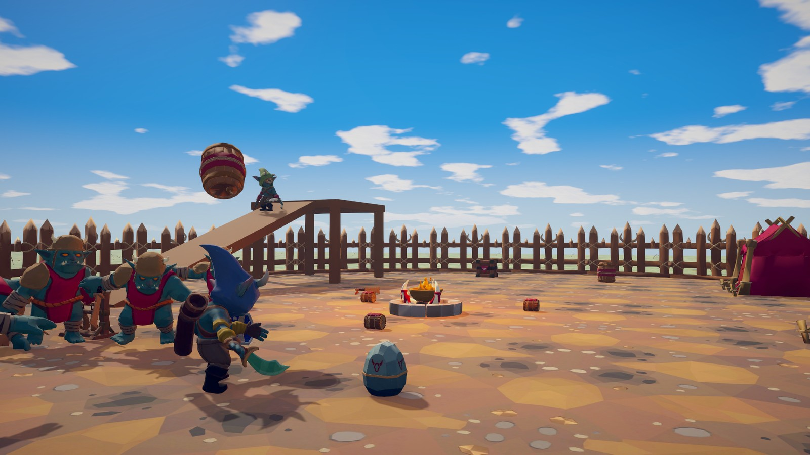
3.10 Feedback: sounds and effects
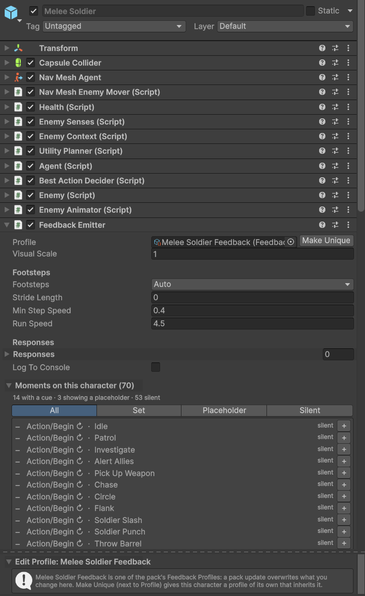
Every gameplay moment the pack produces (a swing, a hit, a block, a footstep, an alert, a death, a wave starting: the full
list is EFeedbackMoment, about 60 of them) is raised through one static hub and turned into sounds, particles, camera
shake, hit-stop, colour flashes and light flashes. Three concepts:
- Cue (
FeedbackCue, plain data): what plays. Audio clips picked at random with pitch and volume variation, a pooled prefab at an anchor, camera shake, hit-stop, flash, light. Cues sit inline on the thing they belong to: everyAttackDatahas Windup, Release and Impact cues, every action has Begin and End,PlayAnimationActionan Effect Cue, projectiles, throwables, weapons and spawners their own groups. - Profile (
FeedbackProfile, one asset per character type): a list of (moment, optional key) → cue. ItsParentsupplies anything it does not list, so a "Humanoid" base can serve many enemies. Keys target one action or attack by its Name or Display Name. - Emitter (
FeedbackEmitter, one component per character or prop): holds the profile, finds anchors (head, hands, weapon, muzzle,FeedbackAnchorchildren), detects footsteps, and exposes every moment to the inspector (Responses, UnityEvents) and to code (Played).
Resolution, from FeedbackHub: a profile entry marked Override Inline → the cue set inline on the action, attack or prop →
the character's profile (exact key first, then the general entry) → its parents → the scene FeedbackManager's
Default Profile. A cue with Layering = Replace ends the search; Add keeps going, so an attack's extra crunch can layer on
the character's generic hit sound. If nothing that played has a visual, the moment's built-in placeholder shows (a burst,
a ground disc, a translucent shield), so a scene looks complete before any art exists; turn them off per profile
(Placeholders: Never, on a profile of yours, such as the one the Feedback Emitter's Make Unique makes) or globally
(FeedbackManager.ShowPlaceholders).
FeedbackManager is the built-in output and the scene's settings: pooled audio voices (MaxVoices, mixer group, 3D
settings), pooled prefabs, camera shake (or ShakeRequested for your own camera), hit-stop (turn off for multiplayer),
and DefaultProfile. One is created on first use; add one to the scene to change settings.
Where things go: voices and body sounds belong in the profile (they belong to the model, and the Swap Model tool can swap the profile with the model); weapon and spell sounds go on the attack or action (they belong to the move).
Footsteps come from the emitter without any component on the model: humanoids step when a foot bone plants, other
walkers every stride, flyers never (Footsteps, Stride Length). Add animation events named Footstep to your own clips and
that character switches to event-driven steps; events named Feedback(string key) and FeedbackMoment(int) raise custom or
built-in moments. The receiver is added to the Animator's object at runtime, so it survives model swaps.
Your own player can raise the same moments so one profile dresses it: the demo player raises Attack Wind-up, Release,
Impact and Blocked keyed "Light" or "Heavy", Dodge, Guard Raised / Lowered / Broken and Action Effect keyed
"Heal" with FeedbackHub.Play(emitter, new FeedbackEvent(moment, transform, position) { Key = ..., Direction = ... }), and
FeedbackHub.Begin / End for spans such as a wind-up. Health raises Hurt, Blocked, Perfect Block, Evaded,
Healed and Died on any object, your player included. Implement IFeedbackMomentSource to list your moments in the
emitter's checklist.
Middleware: implement IFeedbackOutput (Play(cue, event, placement) returning an id, Stop(id)) and assign it to
FeedbackManager.CustomOutput, or set FeedbackHub.Output. Cues carry an AudioEvent string for FMOD or Wwise paths that
the built-in output ignores.
Recipes
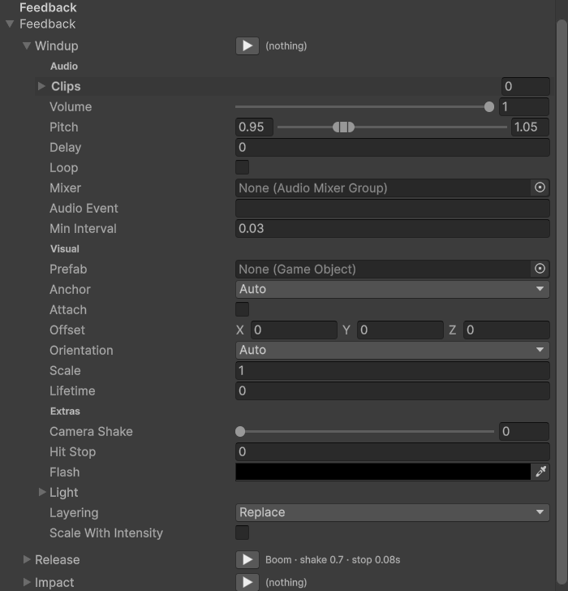
| Goal | Steps |
|---|---|
| One attack: give Boss Slam its own impact | On your Boss variant, select the Boss Slam action and press Make Unique under its Attack field: it gets its own copy, "My Boss Slam", next to the prefab. Under the copy's Feedback ▸ Release (the slam itself) drop a dust prefab and a boom clip, set Camera Shake 0.8 and Hit Stop 0.1. Every enemy that uses your copy plays it; the pack's Boss Slam and the boss's profile are untouched. |
| Every hit on one enemy type: a hurt sound for your soldiers | Select your variant of the Melee Soldier and open its Feedback Emitter. Its profile is the pack's Melee Soldier Feedback: press Make Unique next to it for a profile of its own whose Parent is the pack's, so it still plays everything the pack's does and gets the pack's fixes. (Pressing + on a moment offers the same.) On an enemy with none, press Create instead (it asks where to save the new profile, never in the pack's folders, and fills it with empty Hurt, Died, Footstep, Blocked and Alert rows). Then add a Hurt row with + if the profile has none, and drag clips onto its cue. The Moments on this character list shows where every other moment currently comes from. On one of the pack's own prefabs, Make Unique and Create first offer Create Variant. |
| Every footstep for all enemies | Make a profile in your folder (Create ▸ TinnyStudios ▸ RPG Enemies ▸ Feedback Profile) with a Footstep entry, and assign it to the scene FeedbackManager ▸ Default Profile, so every character without its own footstep cue uses it. The demo does this with Demo/Feedback/Demo Default Feedback. Or make it the Parent at the top of your own profiles' chain; don't set Parent on the pack's profiles, which an update replaces. |
| New model, new voice | In the Swap Model section of EnemyAnimator, set Feedback Profile and press Create Variant. |
| FMOD or Wwise | Implement IFeedbackOutput, assign it to FeedbackManager.CustomOutput, fill AudioEvent on cues or map (Moment, Key) in code. |
| A custom action with sounds | Every EnemyAction already has Begin and End cues. For more, add public FeedbackCue Charge = new FeedbackCue(); and call PlayFeedback(EFeedbackMoment.Custom, position, Charge); the event is keyed by the action's Name. The Enemy Action script template does this with its Hit Cue. |
| Open a door when the boss dies | The boss in your scene ▸ Feedback Emitter ▸ Responses ▸ add Died ▸ hook Door.Open(). Responses run whether or not a cue plays. The response is an override on that scene object: the pack's Boss prefab stays as it is. |
| Combat music | FeedbackHub.Raised += (in FeedbackEvent e) => { if (e.Moment == EFeedbackMoment.Alert) music.Combat(); }; |
| Footstep events on your own clips | Add events named Footstep to the clips. Nothing else: the emitter adds the receiver at runtime. |
The sample content shows the layering. In Feedback (its sounds in Audio, particle prefabs in Effects): a Humanoid
Base profile with the block clang and sparks, a parry chime with hit-stop, the guard break, stagger stars and the dodge;
the Melee Soldier profile on top of it, its Parent, with a hurt grunt and hit sparks, a death thud and poof, and a generic
swing and impact; and the Soldier Slash attack (Data/Attacks) with its own release and an Add-layered impact. The
demo's own, in Demo/Feedback: the Demo Default profile on the demo scene's Feedback Manager, which gives every character
footsteps, hurt, death, the alert blip and explosions; the Hero profile for the demo player with keyed light and heavy
attacks and the heal sparkle; and the explosive barrel with an inline explosion cue and no profile at all. The sample
particle prefabs use Unity's built-in particle material; on URP the pack's converter (Tools ▸ TinnyStudios ▸ RPG Enemies ▸
Render Pipeline) points them at a URP particle material, see Render Pipelines. It changes the pack's files in place,
so run it again after every pack update.
3.11 Reacting to enemies from your game
Enemy.Alllists living and dead enemies in the scene (read-only; in code that runs every frame, loop it with an index, sinceforeachover it allocates);Enemy.IsDead,IsStaggered,IsGuarding,IsHidden,Phase,Health,Context.Senses.State(Unaware,Suspicious,Alert) andContext.Targetare public.Enemy.Spawned(static) is raised for every enemy as it starts, after its difficulty is applied: placed, spawned, summoned or instantiated by you.Enemy.OnDied,Enemy.OnPhaseChanged(int),EnemySenses.OnBecameAlert,EnemySenses.OnLostTarget, the C# eventEnemySenses.StateChanged(old, new),Health.Events,EnemySpawner.EventsandFeedbackHub.Raised(every moment on every character) cover most game logic without touching the pack.enemy.ApplyDifficulty(profile)switches difficulty at runtime;Context.Senses.ForceAlert(target, position)makes an enemy hunt a target immediately (scripted ambushes);enemy.PlaySpawnIn(seconds)plays the rise-from-the-ground entrance;enemy.JoinGroup(group)moves an enemy to another group;EnemySpawner.Begin(target)andResetEncounter()start and call off a wave encounter from a script, andEnemySpawner.Targetis who it is against.
3.12 If enemies ignore the player
| Symptom | Check |
|---|---|
| They never notice the player | Is SimpleCombatTarget on the player and enabled (its inspector shows Registered in Play mode)? Is Health.Team on the player a team they may hurt, Player or Neutral by default? They ignore any other (a warning is logged when such a target registers). Is the player within EnemySenses.SightRange and field of view, or making noise? Sleeping enemies notice slowly. |
| They see the player but stand still | Is there a baked NavMesh under them, and is the NavMeshAgent on it? The AI Debug View (F1) shows whether Chase scores. |
| They chase but never hit | Does the player have a collider on the object with the Health, or under it? Is there a Health or other IDamageable for the target to use? Without one, enemies chase it but have nothing to hurt. |
| Arrows fly through the player | Same collider check: projectiles use sphere casts against colliders. |
| The player's attacks do nothing | Is DamageInfo.SourceTeam the player's team? A new DamageInfo is Player (the enum's first value), but one copied from an enemy's hit says Enemy, and same-team hits are ignored. NewDamage fills in Source, SourceTeam and Direction. Is the enemy Invulnerable (hidden, spawning, roaring, dodging)? |
| Enemies hit each other | They do not: the default team rule ignores same-team hits. Explosions are Neutral and hurt everyone by design. |
4 Render Pipelines
RPG Enemies runs on the Built-in Render Pipeline as shipped and on the Universal Render Pipeline (URP) after a one-click conversion. HDRP is not supported (untested). Nothing in the AI, combat or feedback code depends on a pipeline; only the art does: the materials, the demo sky and the placeholder visuals.
4.1 Built-in Render Pipeline
Nothing to do. Import the pack, open Demo/Scenes/RPGEnemiesDemo.unity, press Play. The optional Post Processing package
(com.unity.postprocessing) adds the demo's bloom, colour grading, ambient occlusion and vignette; without it the scene uses
its lighting and fog only.
4.2 Universal Render Pipeline
The pack's materials use the Built-in Standard shader, which URP renders pink, so they have to be converted once:
- Install Universal RP (
com.unity.render-pipelines.universal) and assign a URP asset in Project Settings ▸ Graphics (and in Quality, if a quality level overrides it). The Universal 3D project template does this for you. - Import RPG Enemies. On the next editor load the pack notices that URP is active while its materials are still Built-in and offers the conversion. Choose Convert. To run it later (or again after re-importing the pack) use Tools ▸ TinnyStudios ▸ RPG Enemies ▸ Render Pipeline ▸ Convert Materials To URP. Check Materials in the same menu reports the active pipeline and how many materials are on each side.
- Open the demo scene and press Play.
Everything happens inside Assets/TinnyStudios/RPGEnemies, in place, and is logged to the Console as a per-file report.
Revert Materials To Built-in maps everything back, so switching a project between the pipelines costs nothing. Both
commands are safe to re-run: materials already on the target pipeline are left alone.
What the conversion does
| Built-in | URP | Carried across |
|---|---|---|
Standard |
Universal Render Pipeline/Lit (metallic) |
_MainTex → _BaseMap (with tiling and offset), _Color → _BaseColor, _Glossiness / _GlossMapScale → _Smoothness, _GlossyReflections → _EnvironmentReflections; _Metallic, _MetallicGlossMap, _BumpMap, _BumpScale, _OcclusionMap, _OcclusionStrength, _EmissionMap, _EmissionColor (and the _EMISSION keyword), _ParallaxMap, _DetailAlbedoMap, _DetailNormalMap, _DetailMask, _Cutoff, _SpecularHighlights keep their names. Rendering Mode (Opaque, Cutout, Fade, Transparent) becomes Surface Type, Blending Mode and Alpha Clipping with the matching blend states, keywords, render queue and RenderType tag. |
Standard (Specular setup) |
Universal Render Pipeline/Lit (specular) |
As above, plus _SpecColor and _SpecGlossMap. |
Sprites/Default |
Universal Render Pipeline/Unlit, transparent, both sides |
_MainTex → _BaseMap, _Color → _BaseColor. |
Unlit/Color, Unlit/Texture, Unlit/Transparent, Unlit/Transparent Cutout |
Universal Render Pipeline/Unlit |
Colour and texture, with the shader's blend mode. |
Particles/Standard Unlit |
Universal Render Pipeline/Particles/Unlit |
Colour, texture, normal and emission maps, rendering mode (including Additive and Multiply), colour mode, flipbook blending, soft particles, camera fading and distortion. |
Default-Material, Default-ParticleSystem (Unity's own materials, used by the sample particle prefabs and the lineup scene's ground) |
Materials/Default (URP).mat, Feedback/Effects/Particles (URP).mat |
Unity's built-in materials cannot be edited, so the prefabs and scenes under the pack folder are pointed at these generated stand-ins instead (URP Lit with default settings; URP Particles/Unlit with the default particle sprite, alpha blended). Revert deletes them and restores the references. |
TinnyStudios/RPG Enemies/Stylized Sky (Demo/Lighting/StylizedSky.shader) |
unchanged | The sky shader has a SubShader for each pipeline (the only difference is where the sun direction comes from: _WorldSpaceLightPos0 on Built-in, _MainLightPosition on URP), so Sky.mat works on both as it is. |
Every converted material remembers the Built-in shader it came from (an override tag), so Revert puts back exactly that shader; the Built-in values stay saved in the material while it is on URP, and a reverted material is cleaned to exactly what it was. Materials the tool did not convert (for example converted with Unity's own Render Pipeline Converter) are reverted to the closest Built-in shader.
Runtime code
- Tints and flashes (
RendererTint,ProceduralEnemyAnimator,DemoPlayer) set both_Colorand_BaseColoron their property blocks, so they work with either shader family. - The placeholder visuals (
EffectUtility, theFeedbackManagerplaceholders) useSprites/Defaulton Built-in and URP'sUnlitshader (set up as transparent) when a Scriptable Render Pipeline is active, falling back to whichever of the two the build contains.Sprites/Defaultis in every build's Always Included Shaders and renders on URP as well. - The
AwarenessIndicator(aTextMeshand aSpriteRenderer) and the IMGUIDemoHUDneed nothing.
Post-processing on URP
The demo's post-processing was authored for the Built-in Post Processing package (PPv2), which does nothing on a
Scriptable Render Pipeline. On URP the package dependency check no longer offers it, and the two PPv2 components in the demo
scene (PostProcessLayer on the Main Camera, the Post Process Volume object) show as missing scripts if the package is not
installed; remove them or ignore the warning. Post-processing is optional. To get the same look on URP:
- Add a Global Volume (GameObject ▸ Volume ▸ Global Volume) with a new profile and these overrides: Bloom (intensity 1.1, threshold 1.05, scatter 0.6), Color Adjustments (post exposure 0.15, contrast 16, saturation 14), Vignette (intensity 0.26, smoothness 0.42), and optionally Screen Space Ambient Occlusion as a Renderer Feature on the URP renderer (intensity 0.55).
- On the Main Camera tick Rendering ▸ Post Processing, and set anti-aliasing to SMAA on the camera (MSAA is set on the URP asset).
Building
Sprites/Default and the URP shaders are found by name at runtime; converted materials in your scenes keep the URP shaders in
the build. If you strip shaders aggressively, keep Universal Render Pipeline/Unlit (or Sprites/Default) for the placeholders.
4.3 HDRP
Not supported and untested. The converter only targets URP; HDRP would need its own material conversion (Unity's Render Pipeline Converter can attempt the Standard materials), a Lit-compatible sky and an HDRP Volume. The runtime code itself does not depend on the pipeline.
4.4 Troubleshooting
- Everything is pink on URP: the materials are still Built-in. Run Check Materials to confirm, then Convert Materials To URP.
- "The URP shaders were not found": the URP package is not installed. Install it from the Package Manager and run the conversion again.
- Everything is pink or invisible on Built-in after trying URP: run Revert Materials To Built-in. It also works when the URP package has already been removed (the materials' shaders show as missing until then).
- Emission disappeared after clicking a material: both material inspectors derive the
_EMISSIONkeyword from the material's global illumination flags; the converter sets them, and re-running the conversion repairs any material edited by hand. - The pack asked about URP but I said "Don't Ask Again": the choice is stored per project (
UserSettings) and forgotten when you run either conversion from the menu.
5 Archetypes
What each of the eight enemies does, how it is put together, and which knobs are worth turning. Every archetype is a prefab
in Prefabs/Enemies assembled from the same parts; the numbers below are the shipped values at Normal difficulty, with
each enemy's own weapon. A weapon's damage and poise multipliers count relative to the one the enemy starts with, so they
only change its hits when it picks up another. Turn the knobs on a Prefab Variant of your own, and on copies of the
shared assets they name: Make Unique gives your enemy its own Attack Data, considerations and Feedback Profile, since
a pack update replaces the pack's own (Authoring).
5.1 How every enemy works
An enemy prefab is one root object plus an Actions child holding one GameObject per behaviour:
- Root: a collider, a
NavMeshAgentwithNavMeshEnemyMover(or aFlyingEnemyMoverfor the Swarm),Health,EnemySenses(sight cone, hearing, awareness),EnemyContext(the blackboard actions and considerations read), the coreAgentandUtilityPlanner(re-evaluates every 0.25 s at Normal, keeps a 0.1 commitment bonus on the running action so enemies do not flip-flop),Enemy(hit reactions, stagger, death, phases, weapon), an animator driver and aFeedbackEmitter. - Actions: each child is one action with a Weight, an Interruptible flag, a Cooldown and a list of Considerations.
The planner scores every action as weight × the product of its considerations and runs the best one. An
AttackActionplays oneAttackDataasset (Data/Attacks), so attacks are data, not code. - Considerations are shared assets in
Data/Considerations. The ones the archetypes use most:
| Consideration | Scores 1 when | Notes |
|---|---|---|
| Has Target / Can See Target / Cannot See Target | Alert with a target / it is in sight / it is not | |
| Is Unaware / Is Suspicious / Is Alert / Has Last Known Position | The awareness state | Idle and Patrol need Unaware; Investigate needs Suspicious and a place to check |
| Far From Target | 12 m or further, fading to 0.2 at 2 m | Chase |
| Near Target (under 8 m) / Close To Target (under 5 m) / Very Close To Target (under 4 m) | Closer than the range | Circle, Guard, Teleport, Back Off |
| Mid Range (4-15 m) | Around 9 m, a bell curve | Throwing, taunting |
| In Attack Range (With Line Of Sight) | Inside the action's own attack's Min-Max range, 0.8 at the edges | One asset serves every attack |
| Can Take Attack Token | Holds a token, or the group has one free | Melee attacks wait for their turn |
| Target Is Attacking | The player's IsAttacking flag |
Dodge |
| Target Not Blocking | 0.35 while the player blocks, 1 otherwise | Duelist attacks wait for an opening |
| Guard Breaker Bonus | 1 while the player blocks, else 0.5 | Guard-breaking attacks prefer a raised guard |
| Punish Healing | 1 while the player heals, else 0.5 | Boss Charge |
| Target Spams Dodge | Rises with dodges in the last 4 s (0.3 at none, 1 at four) | Delayed Smash |
| Target Facing Me / Behind Target Bonus | The player faces the enemy / the enemy is behind the player (0.6-1) | Guard, Flank, slashes |
| Has Allies Nearby / Few Allies Nearby / Allies Unaware | Allies within 10 m: some / few / at least one still unaware | Flank, Flee, alarm |
| Has Weapon / Has No Weapon / Weapon Nearby / Throwable Nearby | Weapon state and props within reach | Arm up, punch, throw |
| Hurt (under 75%) / Low Health | Health below the threshold, higher the lower it is | Take Cover, Flee |
| Recently Hit | Hit in the last 1.5 s | |
| Random Variety | 0.5-1 at random | Keeps groups from moving in lockstep |
| Phase 1 Only / Phase 2 Or Later / Pending Roar | Boss phases | |
| Should Hide / Hidden For 1.5s / Target Beyond 4.5m / Is Hidden / Is Not Hidden | The Pop-up Shooter's cycle | Should Hide is a Composite "any of" |
- Attacks run in three phases: a wind-up (telegraphed with a tint, a ground disc for area attacks, a red flash for
unblockable ones), an active phase that deals damage, and a recovery that is the player's punish window. Melee and
charge attacks need an attack token from the group so only a few enemies swing at once; projectile attacks do not.
Follow-ups chain into combos with a
FollowUpChance; difficulty adds combo hits and shortens wind-ups and cooldowns. - Every enemy also drops its weapon when parried (the disarmable ones), staggers when its poise runs out, alerts its group
when hit, and dies after
Healthreaches 0 (Enemy.DestroyDelayremoves the body).
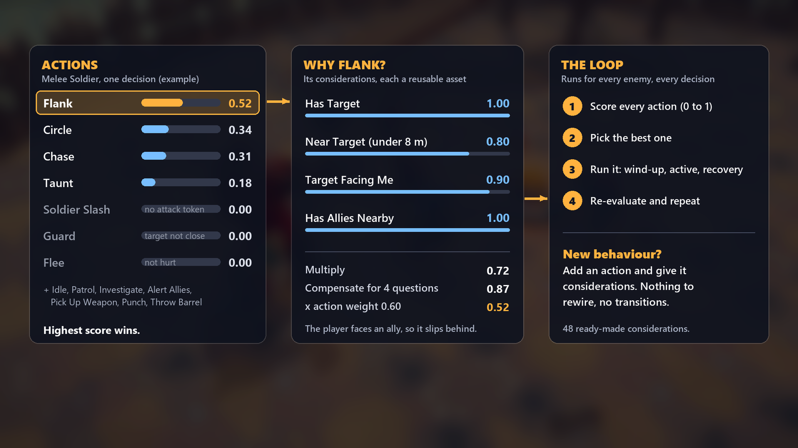
5.2 Melee Soldier
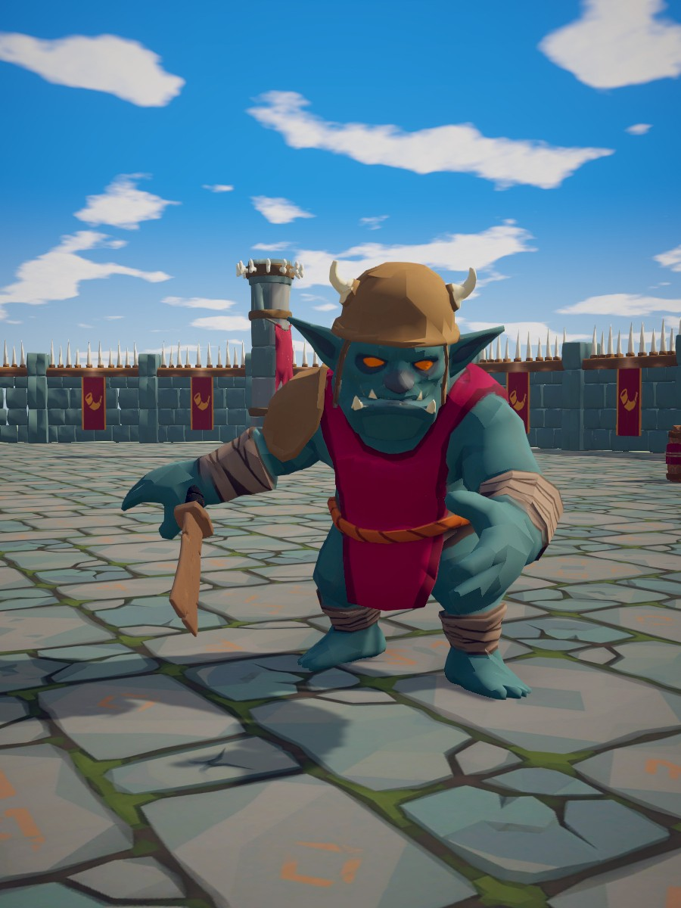
Role: the camp grunt and the pack's reference enemy. Readable, cooperative and a little cowardly: it sits by the fire or sleeps, raises the alarm, grabs a weapon if disarmed, slips behind you while an ally has your attention, throws barrels, guards as you square up, and runs when hurt and alone. It is also the sample enemy with a full feedback profile.
Body: Grunt model (1.7 m) with a Cleaver (disarmable). Health 60, poise 25. Sight 16 m, 120° field of view.
| Action | Weight | Cooldown | Runs when | Knobs |
|---|---|---|---|---|
| Idle | 0.2 | Unaware | Uses idle spots (seats, beds) within 12 m; wanders 4 m from home at 1.6 m/s. Sleeping enemies notice you 3× slower. | |
| Patrol | 0.25 | Unaware | Walks its Waypoints at 1.6 m/s, waiting 2 s at each. No waypoints on the prefab: assign some or remove it. |
|
| Investigate | 0.4 | Suspicious, has a place to check | Pauses 0.6 s (the "?"), walks there at 1.6 m/s, looks around 3 s. | |
| Alert Allies | 0.85 | 20 s | Alert, an ally is still unaware | Blows the horn for 1.2 s (interruptible by breaking line of sight); the whole group becomes alert, and a 25 m noise makes outsiders suspicious. |
| Pick Up Weapon | 0.8 | Alert, unarmed, a weapon or rack within reach | Runs to the nearest dropped weapon or WeaponRack (15 m / 25 m search) and arms in 0.9 s. |
|
| Chase | 0.55 | Has target, far from it | Runs at 4.5 m/s to within 1.9 m, heading for its surround slot. | |
| Circle | 0.45 | Near the target, random | Strafes at 0.9 m/s for 1-2.5 s while waiting for a token, on the automatic ring (Radius 0): 2.1 m, just inside Soldier Slash's 2.4 m reach (1.7 m while disarmed). | |
| Flank | 0.6 | 4 s | Near, the player faces it, allies nearby | Runs (5 m/s) round to 140° off the player's front, the side with fewer allies. |
| Soldier Slash | 0.75 | 2.2 s | Armed, in range, token free; better from behind | Two-hit combo (70% follow-up). |
| Soldier Punch | 0.7 | 1.8 s | Unarmed, in range, token free | Weak, used until it finds a weapon. |
| Throw Barrel | 0.6 | 10 s | A throwable within 10 m, mid range | Picks it up (0.9 s), winds up 0.7 s, lobs it (1.1 s flight, 4-16 m). |
| Flee | 0.9 | 8 s | Alert, low health, few allies | Runs (5 m/s) to a spot 10-20 m away you cannot see, for 3 s. |
| Guard | 0.85 | 4 s | Close, the player faces it, armed | 95% chance × difficulty; 50 guard points, 30% counter after a block, held 1.2-2.2 s, 0.25 s to raise. |
| Taunt | 0.5 | 12 s | Mid range, random | Pounds its chest for 2 s: an opening. |
| Attack | Range | Wind-up / active / recovery | Damage / poise / knockback | Notes |
|---|---|---|---|---|
| Soldier Slash | 0-2.4 m | 0.55 / 0.15 / 0.6 s | 12 / 10 / 1.5 | Follow-up: Soldier Slash 2 (0.35 / 0.15 / 0.6 s, same damage). Hit sphere 1.1 m, 1.2 m ahead, 0.6 m lunge. |
| Soldier Punch | 0-2 m | 0.45 / 0.12 / 0.5 s | 6 / 8 / 1 | Orange telegraph. |
Tune: Guard ▸ Skill and Max Guard set how often you meet a shield and how many hits break it; Flee's Low Health
and Few Allies considerations decide when it breaks; EnemySenses ▸ Awareness Gain Per Second sets how much time a
sneaking player gets. Give Patrol waypoints for guards on a route.
5.3 Heavy Melee
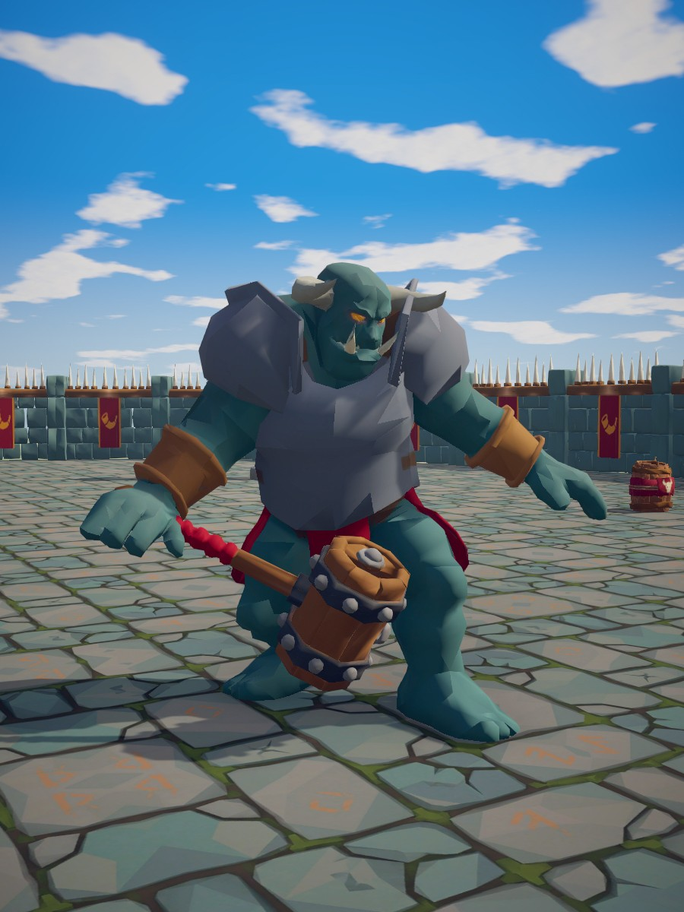
Role: the slow bruiser. Everything it does is huge and telegraphed, and everything it does hurts. Hard to stagger, hard to knock back, punishes blocking with a ground slam and a charge that cannot be blocked, and holds a guard that stops 95% of damage.
Body: Brute model (2.7 m) with a Brute Club (×1.6 damage, ×2 poise damage, +0.5 m reach; disarmable). Size 1.55. Health 180, poise 120. Sight 14 m. Knockback ×0.3, stagger 1.2 s.
| Action | Weight | Cooldown | Runs when | Knobs |
|---|---|---|---|---|
| Idle | 0.2 | Unaware | Wanders 3 m, no idle spots. | |
| Investigate | 0.4 | Suspicious | Walks at 2 m/s. | |
| Chase | 0.55 | Far from the target | Runs at 3.2 m/s to within 2.4 m. | |
| Circle | 0.35 | Near, random | Automatic ring (Radius 0) at 1.5 m/s: 2.7 m, just inside Heavy Smash's 3 m reach with the club. | |
| Heavy Smash | 0.75 | 3 s | Armed, in range, token free | |
| Pick Up Weapon | 0.75 | Alert, unarmed, weapon nearby | Runs at 3.2 m/s. | |
| Ground Slam | 0.7 | 6 s | In range, token free; prefers a blocking player | |
| Heavy Charge | 0.8 | 7 s | In range with line of sight, token free; prefers a blocking player | |
| Throw Barrel | 0.65 | 9 s | Throwable within 10 m, mid range | |
| Beat Chest | 0.45 | 10 s | Mid range, random | A 2 s taunt. |
| Guard | 0.9 | 5 s | Close, the player faces it | Always raises (skill 1 × difficulty); 120 guard points, 95% damage reduction, 50% counter, held 1.5-2.5 s. |
| Attack | Range | Wind-up / active / recovery | Damage / poise / knockback | Notes |
|---|---|---|---|---|
| Heavy Smash | 0-3 m | 1.0 / 0.2 / 1.0 s | 30 / 40 / 4 | Hit sphere 1.4 m, 1.7 m ahead. Blockable, but drains 60 guard: two in a row break a full guard. |
| Ground Slam | 0-3.5 m, area | 1.2 / 0.15 / 1.2 s | 25 / 50 / 5 | 3.5 m circle around itself, unblockable, ground disc telegraph, 12 m noise. |
| Heavy Charge | 6-14 m, charge | 0.9 / (run) / 1.3 s | 25 / 60 / 6 | Rushes at 14 m/s, 3 m past you, unblockable: sidestep it. |
Tune: Health ▸ Max Poise decides whether light hits ever interrupt it (120 means only heavy hits do);
Guard ▸ Damage Reduction and Max Guard set how much your heavy attack (90 guard damage in the demo) matters. Lower
Enemy ▸ Knockback Multiplier to 0 for an immovable wall.
5.4 Agile Melee
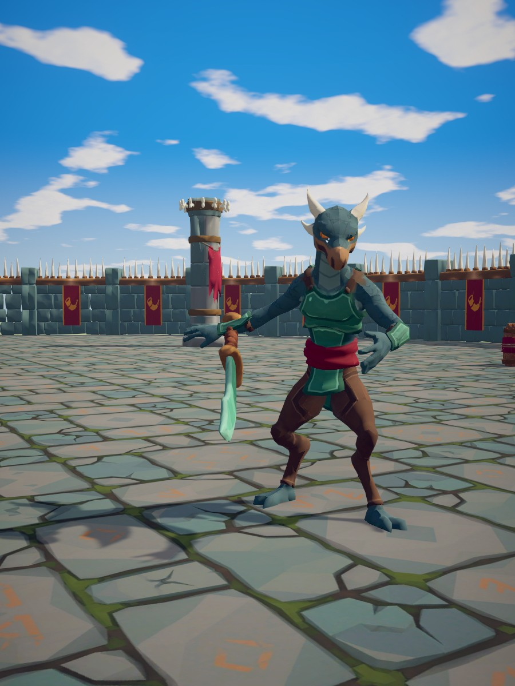
Role: the duelist. Fast, circles, dodges your swings when it sees them coming, refuses to hit a raised guard (it waits or flanks instead), lunges from range and chains a three-hit combo. The enemy that teaches feints and timing.
Body: Duelist model (1.8 m) with a Scimitar (×1.1 damage; disarmable). Size 0.95. Health 70, poise 30. Sight 18 m, 140° field of view.
| Action | Weight | Cooldown | Runs when | Knobs |
|---|---|---|---|---|
| Idle | 0.2 | Unaware | Wanders 3 m. | |
| Investigate | 0.4 | Suspicious | 3.5 m/s. | |
| Chase | 0.55 | Far from the target | 5.5 m/s. | |
| Circle | 0.5 | Near, random | 4 m ring at 3.2 m/s for 0.8-1.6 s. | |
| Quick Slash | 0.75 | 1.2 s | Armed, in range, token free, the player is not blocking; better from behind | Three-hit chain. |
| Lunge | 0.8 | 3 s | Armed, in range (2.5-6 m), token free, the player is not blocking | Does not track you during the wind-up: sidestep it. |
| Soldier Punch | 0.65 | 1.8 s | Unarmed, in range, token free | |
| Pick Up Weapon | 0.85 | Alert, unarmed, weapon nearby | 6 m/s. | |
| Flank | 0.65 | 3 s | Near, the player faces it | 6 m/s round to your side or back. |
| Guard | 0.9 | 3 s | Close, the player faces it, armed, random | 85% × difficulty; 40 guard points, 70% counter, held 0.8-1.4 s. |
| Dodge | 0.95 | 1.5 s | Has target, the player is attacking, close | 90% skill × difficulty dodge chance (45% at Normal); dashes 3.5 m in 0.3 s, invulnerable; a failed roll still starts the cooldown. |
| Taunt | 0.45 | 8 s | Mid range, random | 1.5 s. |
| Attack | Range | Wind-up / active / recovery | Damage / poise / knockback | Notes |
|---|---|---|---|---|
| Quick Slash | 0-2.2 m | 0.3 / 0.12 / 0.3 s | 9 / 8 / 1 | → Quick Slash 2 (0.25 / 0.12 / 0.3 s, 9 / 8 / 1) → Quick Slash 3 (0-2.4 m, 0.4 / 0.12 / 0.6 s, 12 / 20 / 3). 70% follow-up chance each. |
| Lunge | 2.5-6 m | 0.45 / 0.25 / 0.6 s | 15 / 15 / 2 | Lunges 4.5 m. |
Tune: Dodge ▸ Skill and the difficulty's Dodge Chance decide how often your swings whiff; remove Target Not Blocking
from the attacks for a duelist that hammers guards; AttackAction ▸ Max Combo Length caps the chain.
5.5 Archer
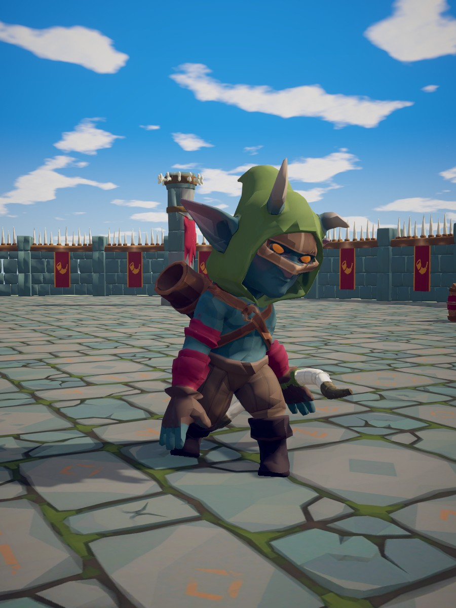
Role: ranged support. Fires led shots from 4-22 m, looks for high ground and clear lines, backs off when rushed, kicks when cornered, ducks behind cover to recover when hurt, and sounds the alarm. Its arrows can be reflected.
Body: Marksman model (1.65 m) with a Bow in the left hand (not disarmable). Health 45, poise 15. Sight 24 m, 140° field of view.
| Action | Weight | Cooldown | Runs when | Knobs |
|---|---|---|---|---|
| Idle | 0.2 | Unaware | Stands at home facing forward (no wander), walk 1.5 m/s. | |
| Alert Allies | 0.85 | 20 s | Alert, an ally is still unaware | Horn, 25 m. |
| Arrow Shot | 0.75 | 1.6 s | Has target, in range with line of sight | Needs no token. |
| Triple Shot | 0.7 | 6 s | In range with line of sight, random | |
| Kick | 0.85 | 3 s | In range (under 1.8 m) | Needs no token; mostly poise damage to push you off. |
| Find Clear Shot | 0.7 | 3 s | Has target, cannot see it | Reposition 8-16 m from you with line of sight; high ground bonus 1, travel penalty 0.6, up to 18 m away. |
| Seek High Ground | 0.4 | 8 s | Has target, random | 9-18 m, high ground bonus 2. |
| Take Cover | 0.9 | 8 s | Recently hit, under 75% health | Runs (5 m/s) to a hidden spot 6-16 m away, crouches there 2-4 s recovering 4 health/s, breaks cover if you come within 4 m. |
| Back Off | 0.8 | 1 s | Within 4 m | Backs away facing you to 8 m. |
| Attack | Range | Wind-up / recovery | Damage | Notes |
|---|---|---|---|---|
| Arrow Shot | 4-22 m | 0.8 / 0.5 s | 10 (+5 poise) | One arrow at 24 m/s, led at your movement. Reflected arrows deal ×3. |
| Triple Shot | 4-14 m | 1.1 / 0.6 s | 8 each | Three arrows at 22 m/s spread over 24°. |
| Kick | 0-1.8 m | 0.35 / 0.12 / 0.4 s | 5 / 25 poise / 4 knockback |
Tune: Arrow Shot ▸ Min Range is the distance at which it stops shooting and kicks or backs off; the PositionQuery
on Find Clear Shot and Seek High Ground decides how far it roams (a smaller Max Travel Distance keeps it on its
tower). Set AttackData ▸ Lead Target off for arrows the player can outrun.
5.6 Mage
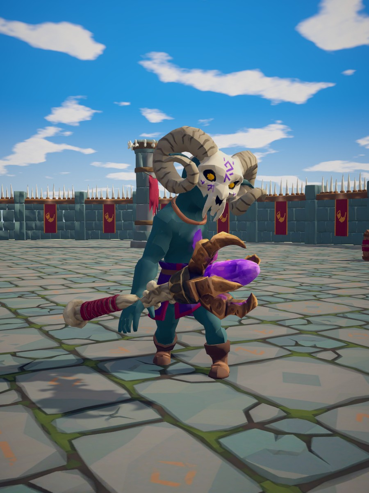
Role: the caster. Fireballs, a fire circle placed under your feet, a teleport when you get close, a swarm summon, and heals for wounded allies: the enemy to kill first.
Body: Caster model (1.65 m) with a Staff (not disarmable). Health 60, poise 20. Sight 20 m.
| Action | Weight | Cooldown | Runs when | Knobs |
|---|---|---|---|---|
| Idle | 0.2 | Unaware | Wanders 3 m at 1.6 m/s. | |
| Investigate | 0.4 | Suspicious | 1.6 m/s. | |
| Fireball | 0.7 | 2.5 s | In range with line of sight | |
| Fire Circle | 0.75 | 7 s | In range | |
| Teleport | 0.9 | 6 s | Within 4 m | Vanishes (0.35 s) and reappears 9-14 m away with a clear shot, up to 30 m from where it stood. |
| Summon Swarm | 0.8 | 18 s | Has target, few minions | Channels 1.2 s (interrupting it cancels the summon), spawns 3 Swarm, at most 4 alive. Minions join its group, already alert. |
| Heal Ally | 0.85 | 6 s | An ally within 12 m is under 60% health | Casts 1 s facing the ally, heals 35. |
| Take Cover | 0.85 | 10 s | Low health | As the Archer's. |
| Keep Distance | 0.6 | 2 s | Within 5 m | Backs away to 9 m. |
| Find Clear Shot | 0.5 | 5 s | Cannot see the target | Reposition 8-14 m with line of sight. |
| Attack | Range | Wind-up / recovery | Damage | Notes |
|---|---|---|---|---|
| Fireball | 3-16 m | 0.9 / 0.5 s | 14 (+5 poise) | Projectile at 13 m/s, explodes in a 1.6 m radius; reflected ×2. Orange telegraph, cast animation. |
| Fire Circle | 3-14 m, area | 1.4 / 0.6 s | 22 / 30 poise / 3 knockback | 2.8 m circle centred on where you stood when the cast began: step out of the disc. Unblockable, no token. |
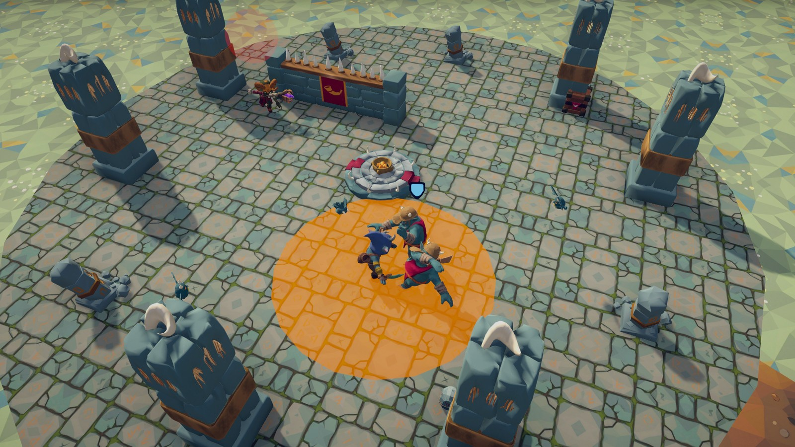
Tune: Summon Swarm ▸ Count and Max Alive scale the pressure; Teleport's Very Close consideration and cooldown decide
how catchable it is; EnemyContext ▸ Ally Heal Threshold and Ally Heal Range (shared with the Ally Needs Healing flag) set when it heals.
5.7 Pop-up Shooter
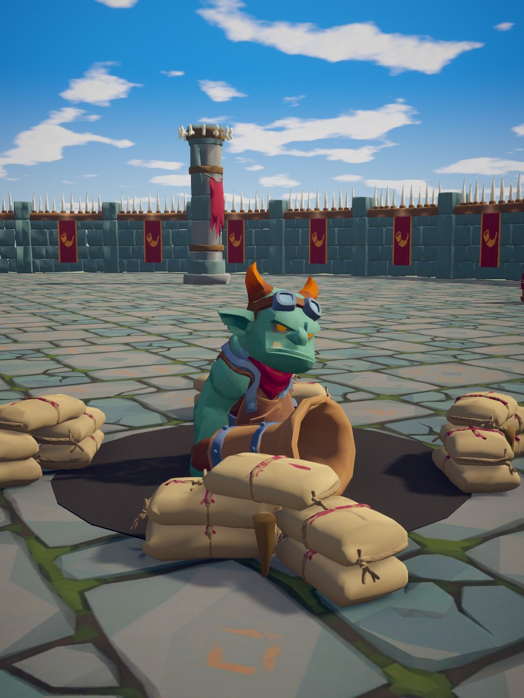
Role: a stationary turret in a foxhole. Pops up to fire a cannon shell, ducks when hit, approached or exposed too long, and comes back up once it has been hidden a moment and you are at a safe distance. Hidden, it cannot be hurt. Its shells reflect at ×5 damage, enough to kill it with its own shot.
Body: Ambusher model (0.95 m) with a Hand Cannon (not disarmable), size 0.9, stationary (NavMeshAgent speed 0) in a
hole ringed with sandbags. Health 40, poise 999 (never staggers). Sight 18 m, 200° field of view, eyes at 1 m. Body removed after 3 s.
| Action | Weight | Cooldown | Runs when | Knobs |
|---|---|---|---|---|
| Idle | 0.2 | Unaware, not hidden | No wander. | |
| Cannon Shot | 0.75 | 1.8 s | Has target, not hidden, in range with line of sight | |
| Hide | 0.95 | Not hidden, and any of: hit in the last 0.8 s, target within 4 m, has a target and exposed over 6 s | Sinks in 0.4 s, invulnerable while hidden. | |
| Emerge | 0.9 | Hidden for 1.5 s, target beyond 4.5 m | Pops up in 0.4 s. |
| Attack | Range | Wind-up / recovery | Damage | Notes |
|---|---|---|---|---|
| Cannon Shot | 3-15 m | 0.6 / 0.5 s | 8 (+5 poise) | Shell at 14 m/s, green telegraph. |
Tune: the Should Hide composite (Data/Considerations/Should Hide) is the whole personality: change Target Within 4m
to make it braver, Exposed Over 6s to change how long it stays up. Hidden For 1.5s and Target Beyond 4.5m set the re-emerge.
Tune copies on your variant: Make Unique on its row in the Hide action's inspector copies the composite with its
children.
5.8 Swarm
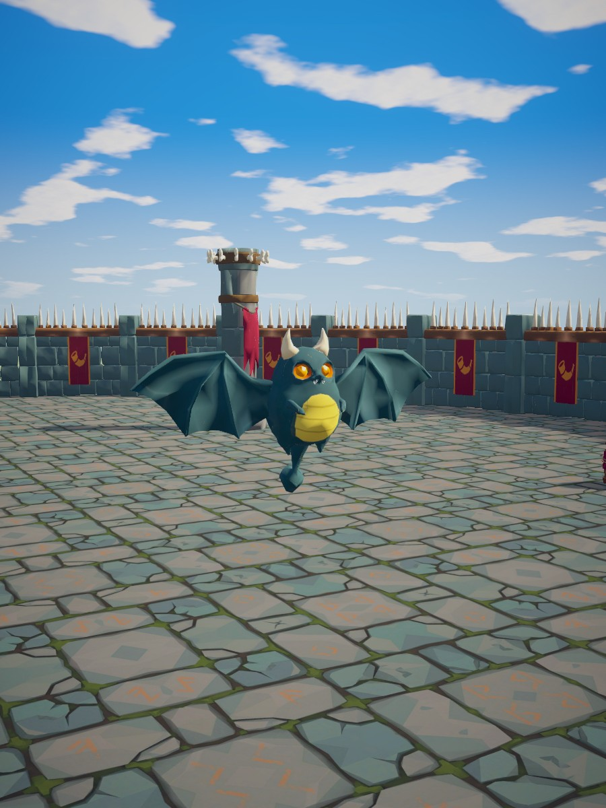
Role: small flyers that flock, circle overhead and dive. Harmless alone, dangerous in numbers, and the Mage's and Boss's summon. They fly, so they need no NavMesh, and they cannot carry weapons.
Body: SwarmCritter model (0.6 m wide), flying with a FlyingEnemyMover (hovers 2.2 m up, keeps 1.4 m from other flyers),
size 0.6. Health 12, poise 5. Sight 14 m, 360° field of view. Body removed after 2 s.
| Action | Weight | Cooldown | Runs when | Knobs |
|---|---|---|---|---|
| Idle | 0.2 | Unaware | Wanders 5 m at 2.5 m/s. | |
| Investigate | 0.4 | Suspicious | 4 m/s. | |
| Chase | 0.55 | Far from the target | 6 m/s to within 5 m, no surround slots (flyers spread on their own). | |
| Circle | 0.5 | Near, random | 4.5 m ring at 4 m/s for 0.6-1.4 s. | |
| Dive | 0.75 | 2.5 s | In range, token free |
| Attack | Range | Wind-up / recovery | Damage | Notes |
|---|---|---|---|---|
| Dive | 0-7 m, charge | 0.5 / 0.6 s | 6 / 5 poise / 1 knockback | Dives at 16 m/s straight at your aim point, 1.5 m past it. Blockable. Hit sphere 0.8 m. |
Tune: GroupCoordinator ▸ Max Attackers decides how many dive at once; FlyingEnemyMover ▸ Separation Radius how tight
the cloud is; Enemy ▸ Destroy Delay how long the bodies litter the ground.
5.9 Boss
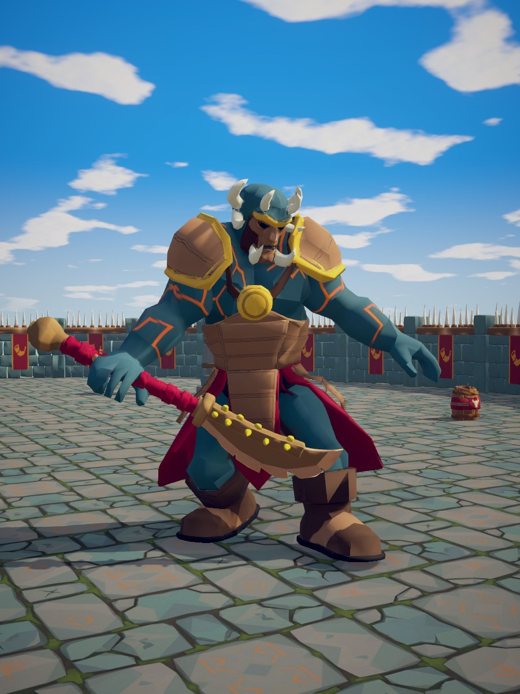
Role: the two-phase set piece. Phase 1: a three-swipe combo that can end in a slam, a ground slam that punishes blocking, a charge that punishes healing, a delayed unblockable smash that punishes dodge spam, boulders at range, and a guard. Below half health it roars (invulnerable, pushing you away), moves 20% faster, and adds a fire ring and swarm summons.
Body: Elite model (3.9 m) with a Glaive (not disarmable), size 2.2. Health 900, poise 250. Sight 22 m, 160° field of view. Phase threshold 0.5. Immune to knockback, stagger 1.5 s, body stays.
| Action | Weight | Cooldown | Runs when | Knobs |
|---|---|---|---|---|
| Idle | 0.2 | Unaware | Stands at home. | |
| Chase | 0.5 | Far from the target | 5 m/s to within 2.8 m. | |
| Circle | 0.3 | Near, random | Automatic ring (Radius 0) at 2 m/s: 2.9 m, just inside Boss Swipe's 3.2 m reach. | |
| Boss Swipe | 0.75 | 2 s | In range, token free | Combo. |
| Boss Slam | 0.7 | 6 s | In range, token free; prefers a blocking player | |
| Boss Charge | 0.8 | 6 s | In range with line of sight, token free; scores double while you heal | |
| Delayed Smash | 0.7 | 8 s | In range, token free; scores with your recent dodges and a raised guard | |
| Boulder Throw | 0.7 | 5 s | In range with line of sight | No token. |
| Phase Roar | 1.0 | A new phase is pending | 1.6 s, invulnerable; a third of the way in it pushes everything within 6 m back 6 m for 5 damage. | |
| Guard | 0.8 | 7 s | Close, the player faces it, phase 1 only | 85% × difficulty; 200 guard points, 60% counter, held 1.5-2.5 s. |
| Fire Ring | 0.85 | 9 s | In range, token free, phase 2 | |
| Summon Swarm | 0.8 | 20 s | Phase 2, few minions | 3 Swarm, at most 4 alive. |
| Attack | Range | Wind-up / active / recovery | Damage / poise / knockback | Notes |
|---|---|---|---|---|
| Boss Swipe | 0-3.2 m | 0.6 / 0.15 / 0.45 s | 18 / 20 / 2 | 80% follow-up → Boss Swipe 2 (0-3.5 m, 0.4 / 0.15 / 0.4 s, 18 / 20 / 2) → Boss Swipe 3 (0.5 / 0.15 / 0.8 s, 22 / 30 / 4) or Boss Slam. Hit sphere 1.6 m, 2 m ahead; each swipe drains 30 guard. |
| Boss Slam | 0-4 m, area | 1.0 / 0.15 / 1.1 s | 30 / 60 / 6 | 4 m circle, unblockable, red disc. |
| Boss Charge | 7-18 m, charge | 0.8 / (run) / 1.2 s | 28 / 60 / 7 | 18 m/s, hit sphere 1.8 m, unblockable. |
| Delayed Smash | 0-3.5 m | 1.6 / 0.2 / 1.0 s | 35 / 60 / 5 | Purple telegraph, unblockable, hit sphere 1.8 m, 2 m ahead: a long wind-up that catches early dodges. |
| Boulder Throw | 8-20 m | 1.0 / 0.8 s | 20 (+5 poise) | Boulder at 16 m/s, explodes in 2.2 m; reflected ×2. |
| Fire Ring | 0-6 m, area | 1.3 / 0.15 / 1.0 s | 30 / 50 / 5 | 6 m circle around itself, unblockable. Phase 2. |
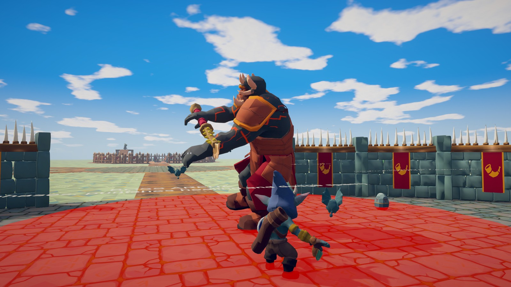
Tune: Enemy ▸ Phase Thresholds (add more values for more phases, highest first) and Enrage Speed Bonus; the
Phase 1 Only / Phase 2 Or Later considerations gate moves per phase; Delayed Smash's Target Spams Dodge and
Boss Charge's Punish Healing are the counters to the player's habits and the first weights to lower for an easier boss.
For a stagger-able boss, lower Health ▸ Max Poise.
6 Authoring
Making your own enemies and variants, new attacks, the animation workflow, weapons, putting your own models on the pack's enemies, and the generic building blocks for behaviours the pack does not have.
The Customization guide (RPGEnemies_Customization.pdf, next to this manual) walks through the no-code tasks step by
step: your character on an enemy, a weapon's grip and size, replacing and adding animations, new attacks, sounds and
effects, and tuning behaviour. This chapter is the reference behind it.
6.1 A variant in ten minutes
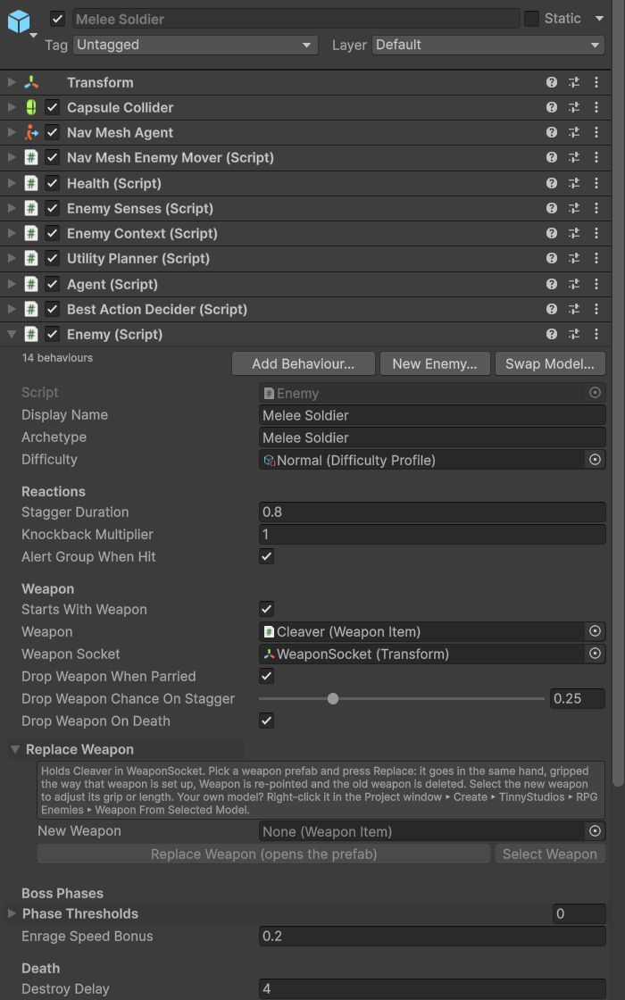
- Create a Prefab Variant of a prefab in
Prefabs/Enemiesand move it into your own folder. A variant keeps receiving the pack's changes, while anything edited inside the pack's folder is overwritten when you update the pack. (A variant plays its original's animation clips until you press Make Unique in its Clip Mapping, below.) - On the root, change what the enemy is:
Health(max health, poise),EnemySenses(sight range, field of view, hearing),Enemy(display name and archetype shown in the debug view, stagger duration, knockback multiplier, weapon drops, phase thresholds, body removal), theNavMeshAgentspeed and radius, and which difficulty profile it uses (to tune one, duplicate it into your folder first: every enemy that uses it would change). - Under
Actions, change what it does. Each child is one action: delete the ones you do not want, duplicate one to add another, and edit itsWeight,Interruptible,Cooldown DurationandConsiderations. An attack is anAttackActionchild with anAttackDataasset in itsAttackfield; give itIn Attack Rangeand (for melee)Can Take Attack Tokenconsiderations, plus whatever else should gate it. Attack Data and considerations are shared assets: before you tune one, give the action its own copy with Make Unique, under itsAttackfield (it offers to copy a combo's follow-ups too) or next to the consideration. It saves the copy next to your prefab and points the action at it. - Press Play with the AI Debug View on (F1) and watch the scores. An action that never runs shows which consideration
is holding it at zero; two actions that flicker need a higher
UtilityPlanner ▸ Commitment Bonus, or a cooldown (an attack's is theCooldownof its Attack Data: its own copy, from Make Unique).
Every tool that would change one of the pack's own prefabs (Make Unique, the Feedback Emitter's Create, Replace Weapon,
Swap Model, a clip dropped in the Clip Mapping, the Behaviour Library's Add) asks first, "Change the pack's prefab?":
Create Variant, the default, saves a Prefab Variant of it in your folder ("My Melee Soldier") and makes the change
there; Change the pack's prefab does it anyway, until the next update. Scene objects and your own prefabs are changed
without the question. Tools that would save a new file inside the pack's folders ask "Save in the pack's folder?" the
same way, your folder by default.
How often an enemy re-plans is its difficulty profile's Reaction Time: Enemy writes it into the planner's
Reevaluate Interval when it starts and whenever its difficulty changes, so the interval set on the prefab is not used.
Actions added from code (AddComponent) work too: hand them to the enemy's Agent.AddAction, which sets them up (their
Setup creates the serialized fields, then calls OnSetup) and ignores one it already has. Add their considerations
with AddConsideration, before or after: the list is never null.
6.2 Considerations
Considerations are ScriptableObjects in Data/Considerations; reuse them across actions and enemies, or create new ones
in your folder with Create ▸ TinnyStudios ▸ RPG Enemies ▸ Considerations:
| Type | What it scores |
|---|---|
| Enemy Flag | A yes/no question from EEnemyFlag (has target, can see target, target is attacking / healing / dodging / blocking, has weapon, can take attack token, recently hit, is hidden, allies unaware, pending roar, throwable / weapon / rack nearby, ally needs healing, is facing target, ...). Invert flips it; True Score and False Score set the two values, so Punish Healing is 1 when healing and 0.5 otherwise rather than 0. |
| Enemy Value | A number from EEnemyValue (awareness, health, distance to target, time since last hit / target seen / alert, time hidden, time exposed, allies nearby, target health, target recent dodges, minion count, phase, angle from the target's front) mapped from Min-Max to 0-1, shaped by the response curve, scaled to Min Score-Max Score. A steep curve over a tiny range makes a threshold: Hit In Last 0.8s maps 0.8 to 0.81 with a descending curve. |
| Attack Range | 1 when the target is inside the action's own AttackData range, Edge Score at the edges, 0 outside; optionally requires line of sight. One asset works for every attack. |
| Phase | 1 between Min Phase and Max Phase. |
| Composite | Any takes the highest child score (an "or"), All multiplies them. An action's own list always multiplies, so use Any for "hide when hit OR approached OR exposed too long". Works with any consideration type. |
| Core: Distance Range, Health Threshold, Random Chance | Work because EnemyContext implements the core ITargetDistanceContext and IHealthContext. |
The flags and values themselves come from EnemyContext (Scripts/Runtime/Enemy/EnemyContext.cs). For a question they do
not cover, write an EnemyConsideration subclass in your own folder. It casts the agent's context for you: override
GetScore(EnemyContext context, IUtilityAction action), return 0-1 through GetSimulatedScore(value) so the Response
Curve applies, and read whatever you like (the context, the action being scored, your game's state, a component of your
own). One asset serves every enemy that lists it, so keep no per-enemy state in its fields. The Code Extending guide has
worked examples. Do not add entries to the pack's EEnemyFlag or EEnemyValue: consideration assets store them by
number, and a pack update replaces the file, so your entries are lost and your assets can end up asking a different
question.
6.3 Attacks as data
Create one in your folder with Create ▸ TinnyStudios ▸ RPG Enemies ▸ Attack Data, or duplicate one of the pack's into
your folder, and drop it into an AttackAction. To tune an attack an action already plays, press Make Unique under
its Attack field instead: the action gets its own copy, named like "My Soldier Slash" and kept next to its prefab with
the same Display Name, and for a combo it asks whether to copy the follow-ups too, chained the same way.
| Section | Fields |
|---|---|
| Type | Melee (a hit sphere Hit Radius at Hit Reach in front, with an optional Lunge Distance), Projectile (Projectile Prefab, Projectile Speed, Projectile Count and Spread Angle, Lead Target), Area (Area Radius around the enemy, or around the target's position at the start of the wind-up with Area On Target), Charge (a dash at Charge Speed, Charge Overshoot metres past the target, hitting anything in the way). |
| Range | Min Range-Max Range; the Attack Range consideration reads these. A Melee attack adds the held weapon's Reach Bonus to Max Range and Hit Reach, follow-ups included (see Weapons below). |
| Timing | Windup (the telegraph; multiplied by the difficulty), Active, Recovery (the punish window), Cooldown (also scaled by difficulty), Track Target During Windup (off for attacks the player should sidestep). |
| Damage | Damage (scaled by difficulty) and Poise Damage, tuned for the weapon the enemy starts with (Melee attacks scale both by the held weapon, see Weapons below), Knockback, Guard Damage (guard drained when blocked, 0 = the damage), Unblockable (shows a red warning; area and charge attacks ship unblockable), Hit Layers (which layers melee, charge and area hits check; everything by default, narrow it to a hurtbox layer). |
| Combo | Follow Ups and Follow Up Chance: after recovery, one follow-up in range may start without releasing the attack token. AttackAction ▸ Max Combo Length caps the chain (3), difficulty adds hits. |
| Animation | Animation State: one clip for the whole attack, time-warped so its hit frame lands exactly when damage is dealt. For a new move, name a spare slot, Custom1-Custom6, or a state of your own (see Animation below). Or Windup State / Active State / Recover State for attacks built from three clips (charges use ChargeWindup, ChargeRun, ChargeRecover). Windup Anim / Active Anim are the fallbacks for characters without those states. |
| Presentation | Telegraph Color (the tint and disc colour), Show Ground Telegraph (a disc during the wind-up; on for area attacks). |
| Group | Requires Token (melee, area and charge attacks wait for a free attack token; projectiles do not), Noise Radius when it lands. |
| Feedback | Windup, Release and Impact cues that travel with the attack to every enemy that uses it. |
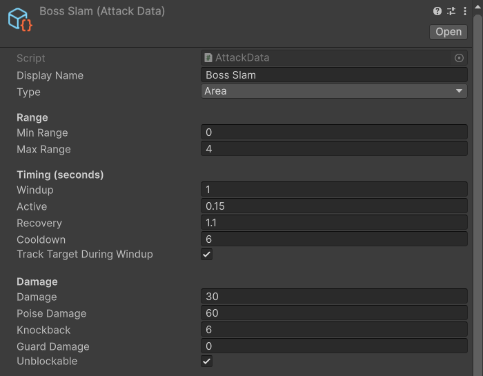
AttackAction itself has Blocked Recoil (extra recovery when the player blocks it). For an attack the pack cannot express
(a beam, a grab, a multi-stage cast), subclass AttackData for its settings and AttackAction for its behaviour. For each
attack of a combo the virtual hooks run in this order: StartAttack(data) (the wind-up); BeginActive() (sets
ActiveDuration, then lunges, calls FireProjectiles(), damages the area or calls StartCharge(), and calls
BeginReleaseFeedback()); UpdateActive() on every update of the active phase (melee and charge hits, each result
through HandleReport(report)); BeginRecovery(); and PickFollowUp(), which returns the next Attack Data or null.
MakeAttackDamage() builds every hit. Subclasses also get CurrentAttack, Phase, PhaseTime, ComboCount,
WindupTime, a settable ActiveDuration and AreaCenter, HitThisAttack (clear it for an attack that hits again),
HitReach, HitCenter and EnterPhase(phase). The Code Extending guide builds a beam this way.
6.4 Weapons: grip, size and swaps
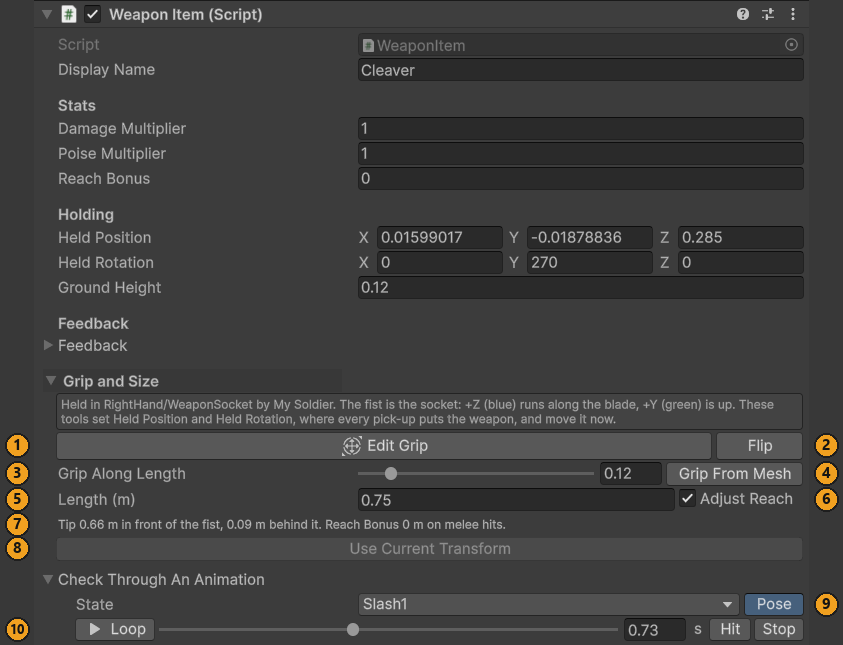
A weapon is a WeaponItem. How it sits in a hand is its own Held Position and Held Rotation, in the hand socket's frame:
the origin is the centre of the fist, +Z runs along the blade and +Y is up. Every Equip applies them, so moving a held
weapon's transform by hand does not last. The inspector's Grip and Size section edits them and moves the held weapon
with them:
- Edit Grip: Scene-view handles at the fist (also in the Tools overlay) that turn the weapon around the fist and slide it through the hand. The fist is drawn with a blue "blade +Z" arrow, a green "up +Y" arrow and the tip's distance.
- Flip turns a weapon held by its blade end for end. Grip From Mesh works the grip out from the mesh the way the pack's weapons were made, at Grip Along Length (0 the back end, 1 the tip).
- Length (m) resizes the weapon around the fist, so the handle stays in the hand. With Adjust Reach on (the
default),
Reach Bonusgrows by how much further the tip reaches. - Use Current Transform keeps a move made with the Transform tools, and Snap Back undoes it. Moves made while the weapon is selected are kept automatically, and the Scale tool resizes it around the fist, like Length.
- Check Through An Animation poses the character in any state of its controller, its own attacks first: pick a State and press Pose. It starts at the hit frame; scrub, Loop / Pause, Hit, Stop. Nothing is saved or dirtied.
An enemy adds its weapon's Reach Bonus to the Hit Reach and Max Range of its melee attacks, follow-ups included. For
example, lengthening the Melee Soldier's cleaver from 0.75 m to 0.975 m moves its tip from 0.66 m to 0.86 m in front of the
fist, gives it a Reach Bonus of +0.198, and lands Soldier Slash 1.398 m ahead instead of 1.2 m.
The weapon's Damage Multiplier and Poise Multiplier scale the damage and poise damage of those attacks too, but
relative to the weapon the enemy was made with, since its Attack Data are tuned for that one: with its own weapon it hits
exactly as its Attack Data say, and a heavier weapon picked up hits harder. A Melee Soldier (built with the 1× cleaver)
that grabs the demo's Heavy Club (1.4× damage, 1.8× poise) hits 1.4 times as hard, with 1.8 times the poise damage.
The reach is not relative: set the ranges of your copy of an attack with its own weapon's Reach Bonus in mind.
Replace Weapon, under the weapon fields of the Enemy inspector (and the demo player's), gives a character a copy of
any Weapon Item prefab: it goes into the same socket with its own grip, Weapon and anything else that named the old weapon
are re-pointed, and the old one is deleted. On a prefab asset it opens Prefab Mode first, so the change can be undone
there. Use it on your own variant: on one of the pack's prefabs, which the next update puts back, it asks first and
offers Create Variant, which gives the weapon to a new variant in your folder. The new weapon is then the one the enemy
starts with, so its multipliers become the baseline and its Reach Bonus
counts in full. To change the grip or size of one of the pack's weapon prefabs, make a Prefab Variant of it in your
folder and change that. Create Weapon From Model (select a model in the Project window, then Create ▸ TinnyStudios ▸ RPG Enemies ▸
Weapon From Selected Model, or Tools ▸ TinnyStudios ▸ RPG Enemies ▸ Create Weapon From Selected Model) makes a
Weapon Item prefab from any model, with the grip worked out from its mesh.
6.5 Animation
The shared base Animator
Every rigged character uses the same Animation/EnemyBase.controller, so actions can play states by name on any character:
a locomotion blend tree (Idle, Walking, Running, WalkBackward, StrafeLeft, StrafeRight, driven by MoveX / MoveZ /
Speed), loops (SitIdle, SleepIdle, CrouchIdle, CarryIdle, CastChannel, HiddenPeek, ChargeRun, Guard), held poses (Death,
TeleportOut, ChargeWindup, Hide), one-shots (Alert, GuardHit, Stagger, StaggerLong, Recoil, SpawnIn, PickUp, Taunt,
BlowHorn, Roar, Throw, DodgeBack, DodgeSide, TeleportIn, PopUp, ChargeRecover, CastHeal, Summon), the generic attack phases
(Windup, Attack, Recover), the named attacks (Punch, Kick, Slash1, Slash2, HeavySmash, GroundSlam, QuickSlash1-3, Lunge,
Shoot, TripleShot, CastFireball, CannonShot, Sweep1-3, Slam, DelayedSmash, BoulderThrow, FireRing) and six spare slots,
Custom1-Custom6, then any states of your own (below). An Upper Body layer (masked by Animation/EnemyUpperBody.mask)
holds Guard and GuardHit so a guard stays up while the legs walk.
Each character gets an Animator Override Controller of the base that swaps in its own clips. Missing clips fall back to
similar states (StaggerLong → Stagger, Taunt → Roar → BlowHorn → Alert, and so on: the pack's table of states in
EnemyAnimatorTools.cs, which you read but never edit), and finally to Idle, so a character with five clips still plays
everything.
A new move needs no code. Drop its clip on a spare slot, Custom1 to Custom6, in the character's Clip Mapping (below),
and name the slot in an Attack Data's or a PlayAnimationAction's Animation State. Each character fills its own slots, so
one Attack Data naming Custom1 plays whatever each character has there; an empty slot plays the character's generic
Attack clip, or Idle. Hit frames are detected for the slots as for any attack.
A named state of your own needs no code either, for a move with a name (ShieldBash) or more than six new moves. In
the Clip Mapping, Your states ▸ Add State… asks for its name (checked as you type), its kind (One shot, Loop or Hold),
whether it is an attack, what it falls back to (for an attack, Its own attack by default: each character's first attack
clip, from Attack, Slash1, QuickSlash1, HeavySmash, Sweep1, Punch, Kick, Shoot, CastFireball and CannonShot, then Idle),
and whether the Upper Body layer gets it too. It goes into an
ExtraAnimatorStates asset in your folder (Create ▸ TinnyStudios ▸ RPG Enemies ▸ Extra Animator States, made for you
the first time) and into the base Animator, undoably; every character plays its fallback until it has a clip of its own,
and [AnimatorState] menus list your states first. Tools ▸ TinnyStudios ▸ RPG Enemies ▸ Update Base Animator merges
the pack's states with yours and gives every Override Controller a fallback clip for any state it lacks; the pack also
runs it after every change to your asset.
Each state's empty placeholder clip is stored inside your asset, not in EnemyBase.controller, and every Override
Controller keys its clip for the state by that placeholder. When a pack update replaces EnemyBase.controller, your
states are put back with the same placeholders by themselves (the Console says so), so every character with its own
Override Controller keeps its clip, and the pack's own characters play the fallback. Limits: a Hold state is added to
Hold States only on the character you added it from; a state on the Upper Body layer plays until code calls
StopUpperBody; and keeping the base in step removes from EnemyBase.controller any state without a clip that it did
not add, which only matters for a hand edit to the pack's controller. The Code Extending guide takes one, a shield bash,
from script to Play mode.
Building a character's animator from a folder of clips
- Name the clip files
Prefix_Anim_State.fbxafter the states above (Orc_Anim_Idle.fbx,Orc_Anim_Walking.fbx,Orc_Anim_Slash1.fbx, ...) and put them in one folder with the rigged model. A file may hold several clips cut from one take; any clip named after a state is used for that state. At leastPrefix_Anim_Idleis required. - Select the folder and run Tools ▸ TinnyStudios ▸ RPG Enemies ▸ Create Enemy Animator From Selected Folder. It
configures the Humanoid clip imports for AI-driven characters (root motion baked into the pose, height from the feet,
the folder's rigged avatar copied to clips exported without one; only clips never set up before are touched), creates
Prefix.overrideControllerin the folder, and logs which states use fallbacks and which clip names matched nothing. - Assign the controller to the model's
Animator, add anEnemyAnimatorto the enemy root pointing at that Animator, and press Detect Hit Frames in its inspector. It reads aHitAnimation Event from each attack clip when there is one (add it in the import settings of your own clips, Dont Require Receiver; for the pack's clips, whose import settings an update replaces, edit theHit Markersinstead), otherwise it samples the clip and takes the moment the weapon hand (or the foot, for kicks) moves fastest. The result is theHit Markerslist, editable by hand. - Press Measure Stride Speeds: it times how fast each locomotion clip's feet move at this character's size (
Walk,Run,Backward,Strafe Clip Speed) so clips play at exactly the speed the AI moves, and measures which states float or sink on this character (Ground Offsets). Ground Clips adjusts the clips' import height offsets so the feet (or the body, for clips that lie down) rest on the ground.
At runtime EnemyAnimator feeds the blend tree from the enemy's real movement, time-warps one-shot clips to the
action's duration (between Min and Max Playback Speed), plays an attack clip so its hit frame lands when damage is dealt,
holds Hold States (Death, Hide, ...) instead of returning to locomotion, snaps the model's soles to the real ground
(Snap To Ground, off for flyers; Ground Layers narrows what counts as ground), lifts a fallen body so nothing sinks (Keep Above Ground States), and tints the
renderers for telegraphs, hit flashes and difficulty (Tint). State Overrides remaps a general animation to another state.
Characters without a rig use ProceduralEnemyAnimator (bob, squash and tilt on a Visual transform, a Weapon Pivot swing);
the Swarm's static model uses it. Both implement IEnemyAnimator, which actions and the mover drive: to use an animation
setup of your own, implement it (the Code Extending guide's SimpleAnimatorDriver is an example) on the enemy or any
child, in place of the Enemy Animator.
Clip Mapping: changing one clip
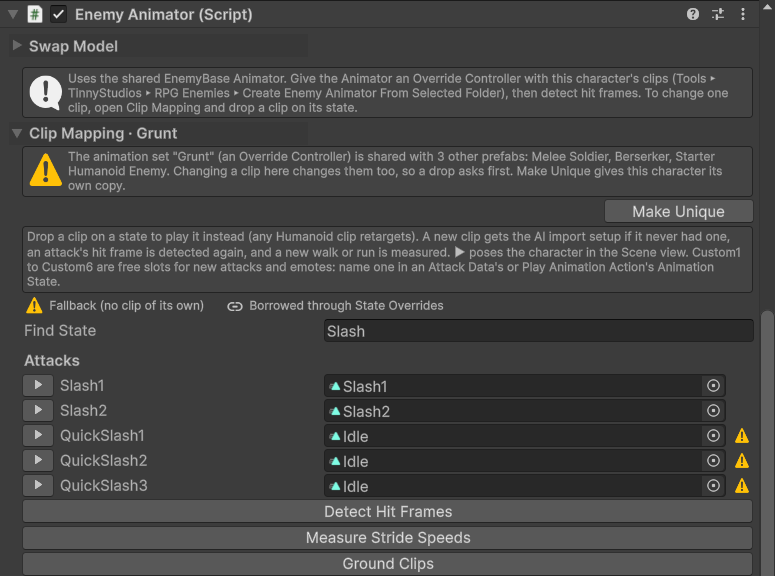
The Clip Mapping at the top of the EnemyAnimator inspector, under Swap Model, lists every state of the character's
Override Controller with the clip it plays, grouped (Locomotion, Loops, Held poses, Reactions and one-shots, Attacks, Spare
slots for your own moves) and filtered by Find State.
- Drop a clip on a state to play it instead; any Humanoid clip retargets. A clip file that was never set up gets the
folder tool's import setup; a one-shot (an attack, a spare slot, a reaction) gets its hit frame detected again, keeping
the other
Hit Markers; a locomotion clip gets the stride speeds measured again, and any other state its ground offset. The measuring needs a Humanoid. Clearing a state's clip puts it back on its fallback. Undoable, apart from the import setup. - Two markers, named by a legend above Find State. ⚠ Fallback (no clip of its own): the state has no clip, or
exactly the clip its fallbacks fill it with. A link icon, Borrowed through State Overrides: this Enemy Animator's
State Overridesplay another state for the general animation that uses this one. Where a clip came from decides it, not its name: a clip you dropped is never marked, and neither is an empty spare slot. - ▶ poses the character in that state in the Scene view, at the hit frame, with a time line to scrub (Loop / Pause, Hit, Stop). It uses the real clip in Edit mode, like the Animation window, and nothing is saved or dirtied.
- Shared controllers. When other prefabs play the same Override Controller, a warning names them and Make Unique copies the controller next to this character's prefab and assigns the copy; on one of the pack's own prefabs it offers Create Variant first, and gives the copy to a new variant in your folder. A Prefab Variant shares its original's controller until it is made unique. A clip dropped on a shared controller asks first: Make Unique and replace, Change it for all (not asked again for that controller until Unity restarts), or Cancel; one dropped on one of the pack's animation sets that no other prefab plays asks "Change the pack's clip?" the same way.
In the EnemyAnimator inspector, the Swap Model section replaces the model inside an enemy while keeping
everything else: the AI, actions, considerations, attacks, weapon, shield and guard stance. Swap Model… at the top of
the Enemy inspector opens the same section in a window of its own, which follows the selection. What you pick is kept
per character and cleared after a swap.
| Option | Meaning |
|---|---|
| New Model | Your model or prefab. Humanoid rigs reuse the enemy's current animations straight away (Humanoid clips retarget), so it works immediately. Generic rigs need their own clips. |
| Animations | Keep Current (Humanoid only), Override Controller (an override of EnemyBase you made), or Clips Folder (builds one from a folder of Name_Anim_State clips, as above). |
| Height | Metres, head to toe; 0 keeps the old model's height, measured from its rest pose. At another height, what depends on the body's size is resized by the same ratio: the root's colliders, the NavMesh Agent, EnemySenses ▸ Eye Height, the awareness marker, the muzzle and hold points, the footstep stride, and, with the same clips, the locomotion clip speeds and ground offsets. Attack reach (the Attack Data, the weapon's Reach Bonus) is left alone. |
| Feedback Profile | Optional: the new model's voice and footsteps. The emitter's Visual Scale is scaled with the height. |
Then, on a prefab selected in the Project window, Create Variant (a Prefab Variant with your model, saved where you
choose, starting in your own folder; the original is untouched and the variant keeps receiving AI changes) or Replace
In Prefab (in place, not undoable; on one of the pack's prefabs it asks first and offers Create Variant instead). In
Prefab Mode, on a variant too, and on a scene object that is not a prefab instance (also in Play mode), the section has a
single Swap Model button instead, and the whole swap is one Undo step. In Prefab Mode of one of the pack's prefabs,
which the next update would put back, it asks first too, and Create Variant swaps the model in a new variant in your
folder. Animations from a Clips Folder inside the pack's folders ask "Save in the pack's folder?" for the Override
Controller built from them. On a prefab instance in a scene it offers Select
Prefab (then Create Variant, for one of the pack's) and Open Prefab (for your own), to swap the model in the prefab.
Weapons are re-attached to a grip socket rebuilt in the new hand (worked out from the models' T-poses, so a mid-swing
swap still grips correctly), props on bones (a shield strapped to a forearm) move to the matching bone, a
HumanoidGuardPose is copied over, references on the enemy that pointed into the old model are re-pointed, hit frames
are re-detected when the controller changed, and the old model is deleted. A prop with no matching bone on the new model
is kept on the character, switched off.
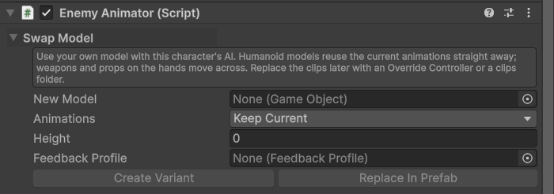
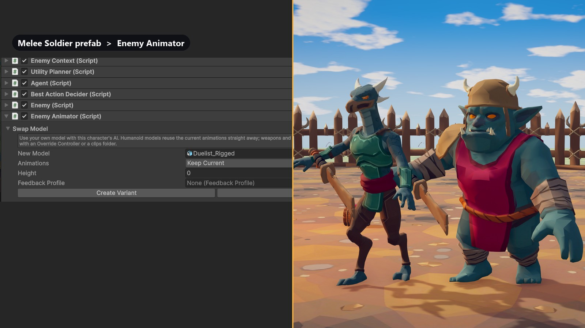
HumanoidGuardPose: guarding without a guard clip
Enemies and the demo player play the Guard and GuardHit clips on the Upper Body layer. A Humanoid character with no
Guard clip can use HumanoidGuardPose instead: add it to the model next to the Animator (the base layer's IK pass is
already on) and it layers a procedural stance on whatever plays: knees bend, the guarding shoulder leads, the left hand
brings a shield (Shield, optional) up in front of the chest, the weapon is held low and ready (Shield style) or raised
across the body (Weapon style), and the head watches the threat. Hand targets are measured in arm lengths, so one setting
suits any proportions; Use Style Defaults in the component menu resets them after changing Style. It finds its
IGuardPoseSource (an Enemy, or your player implementing IsGuardRaised and GuardLookTarget) in the parents, and
jolts back when the guard takes a hit: from the parent Health's blocks or, without one, from the character's Blocked
and Perfect Block feedback moments (PlayBlockJolt(result) jolts it from code). Tick Preview Raised in Play mode to
tune it. With neither a Guard clip nor a guard pose, a guarding enemy shows a translucent shield placeholder so the guard
still reads.
6.6 Generic building blocks
PlayAnimationAction: stop, play an Animator state (Animation State, or Fallback Animation when the character lacks
it) fitted to Duration while facing the target, optionally telegraphed with Effect Color, and fire an effect at
Effect Time (a fraction of the duration; 1 means interrupting the action cancels it): a FeedbackCue (Effect Cue) and a
UnityEvent (On Effect). Require Target is None, To Start or Throughout (an alarm the player can interrupt by escaping);
Invulnerable ignores damage while playing. Taunt, Roar, Alert Allies, Summon, Heal Ally, Hide and Emerge are presets of it,
so a victory dance or a war cry is just this component with a state name, and a new "cast, then something happens" move is a
subclass overriding PerformEffect (plus OnPlay to pick a target or fail, IsStillValid, EffectPoint, OnStop).
RepositionAction (and its base PositionQueryAction): move to the best-scoring point around the target, found by the
PositionPicker from a PositionQuery: rings of points between Min and Max Distance, scored by line of sight
(Require for a clear shot, Avoid for cover), High Ground Bonus, Ally Spacing and Travel Penalty within
Max Travel Distance; Require Hidden rejects a best point the target can still see. Then optionally hold there for
Hold Duration seconds playing Hold State, recovering Heal Per Second, and leave if the target comes within
Break Hold Distance. Find Clear Shot, Seek High Ground, Take Cover (the preset with Avoid, Require Hidden and a hold),
Flee (runs) and Teleport (warps) are all this. Select the enemy in Play mode to see the scored points (red poor, green best,
cyan ring chosen).
CompositeConsideration: the "or" (see Considerations above). The Pop-up Shooter's Should Hide is the example:
Any of (hit in the last 0.8 s, target within 4 m, All of (has target, exposed over 6 s)).
Writing a new action: derive from EnemyAction and implement OnActionBegin, OnActionUpdate (return Running,
Completed or Failed) and OnActionEnd, and OnSetup to cache things once Ctx is ready (Setup itself is sealed).
You get Ctx (the context), Enemy, Mover (MoveTo, Dash, Warp, Stop,
LookTarget), Senses, Coordinator, Self, Difficulty, Elapsed, and helpers: FaceTarget, MakeDamage,
TryFindPointInDirection, MoveAwayFromTarget, SetInvulnerable, PlayState / PlayAnim, PlayUpperBody /
StopUpperBody (on animators that layer the upper body), SetTelegraph, and PlayFeedback / BeginFeedback /
EndFeedback for sounds and effects. Call FailOnNextUpdate() from OnActionBegin when
the action cannot start (nothing to pick up, no spot to go to); CanRun adds code checks before scoring. Actions live on
child objects of the enemy, so always move and rotate Self, never the action's own transform. Create ▸ TinnyStudios ▸
RPG Enemies ▸ Scripting ▸ Enemy Action writes a working one to start from, in your folder (there are Play Animation
Action, Attack Action and Enemy Consideration templates too). The Behaviour Library lists it under Your action types
as soon as it compiles, and Add puts it on your enemy; [BehaviourRole("…")] on the class picks its group, and
[Description("…")] its text. The Code Extending guide (RPGEnemies_CodeExtending.pdf) takes one from the script to
Play mode, and walks through a complete action.
6.7 Difficulty, groups and encounters
Difficulty profiles, GroupCoordinator and EnemySpawner are covered in Quick Start. Two authoring notes:
Enemy.ApplyDifficultyscales max health, awareness and reaction time, sets the mover's Difficulty speed modifier, and asks its group for the profile'sExtra Attackers(the group allows the most any member asks for);AttackActionreads the damage, wind-up, cooldown and combo multipliers itself, andDodgeAction/GuardActionroll theirSkillagainst the profile's chances. A profile is therefore safe to switch mid-fight.ApplyDifficultyis virtual, for stats of your own from aDifficultyProfilesubclass, and the staticEnemy.Spawnedevent is raised after it for every enemy that starts, so a difficulty menu can reach enemies that appear later.- An enemy joins the
GroupCoordinatoron its nearest parent when it initialises. Spawners parent what they spawn to themselves, and summons join the summoner's group.enemy.JoinGroup(group)moves an enemy to another group later.